| 0 |
 |
http://1amstudios.com/2016/11/27/c64-slack-client/ |
| 1 |
 |
http://250bpm.com/blog:50 |
| 2 |
 |
http://adobe-fonts.github.io/source-code-pro/ |
| 3 |
 |
http://alexey.lyanguzov.ru |
| 4 |
 |
http://anartfulscience.com/Typography-First.php |
| 5 |
 |
http://augmentingcognition.com/ltm.html |
| 6 |
 |
http://bamos.github.io/2016/08/09/deep-completion/ |
| 7 |
 |
http://betterexplained.com |
| 8 |
 |
http://blog.bonnieeisenman.com/projects/ |
| 9 |
 |
http://blog.demofox.org/2017/02/07/a-geometric-interpretation-of-neural-networks/ |
| 10 |
 |
http://blog.hvidtfeldts.net/index.php/generative-art-links/ |
| 11 |
 |
http://blog.jakealbaugh.com/ |
| 12 |
 |
http://blog.johnnovak.net/2016/09/21/what-every-coder-should-know-about-gamma/ |
| 13 |
 |
http://blog.rudnyi.ru/ru/2021/10/pechenkin-obyasnenie-kak-logika.html |
| 14 |
 |
http://blog.stargrave.org/russian/ |
| 15 |
 |
http://blog.straycat.me.uk/?p=1044 |
| 16 |
 |
http://blog.zikes.me/post/how-i-ruined-office-productivity-with-a-slack-bot/ |
| 17 |
 |
http://blogerator.ru/page/ne-dumaj-o-mazhorah-i-minorah-svysoka#cut |
| 18 |
 |
http://bluegrazz.net/mike/minstrel/specific/index.html |
| 19 |
 |
http://brohrer.github.io/how_convolutional_neural_networks_work.html |
| 20 |
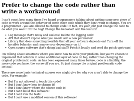 |
http://catern.com/change_code.html |
| 21 |
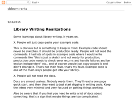 |
http://cbloomrants.blogspot.com/2015/09/library-writing-realizations.html |
| 22 |
 |
http://chaoticatmospheres.com/biotop-from-polygonia |
| 23 |
 |
http://chris.moo-art.de/2017/10/zweck-eines-zettelkastens/ |
| 24 |
 |
http://codepen.io/enxaneta/pen/bEggGz |
| 25 |
 |
http://codepen.io/enxaneta/pen/eNbWby |
| 26 |
 |
http://codepen.io/jakealbaugh/pen/EKRarY |
| 27 |
 |
http://codepen.io/jakealbaugh/pen/qNrZyw |
| 28 |
 |
http://codepen.io/zadvorsky/pen/iwemx |
| 29 |
 |
http://corgibytes.com/blog/2016/12/06/getting-old-er-in-tech/ |
| 30 |
 |
http://deeplearninggallery.com/ |
| 31 |
 |
http://devzum.com/2015/06/best-machine-learning-cheat-sheets/ |
| 32 |
 |
http://documentaryaddict.com/science |
| 33 |
 |
http://drmcninja.com/ |
| 34 |
 |
http://expertenough.com/1423/deliberate-practice |
| 35 |
 |
http://fivedots.coe.psu.ac.th/~ad/myrio/ |
| 36 |
 |
http://fyprocessing.tumblr.com/ |
| 37 |
 |
http://geeqie.sourceforge.net/ |
| 38 |
 |
http://genekogan.com/ |
| 39 |
 |
http://hintjens.com/blog:125 |
| 40 |
 |
http://imgur.com/account/favorites/VbLIl |
| 41 |
 |
http://jazzrootsbook.com/routines/r_08_mamastew.html |
| 42 |
 |
http://johnkenn.blogspot.ru/ |
| 43 |
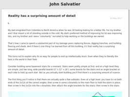 |
http://johnsalvatier.org/blog/ |
| 44 |
 |
http://julienleonard.com/ |
| 45 |
 |
http://katiechironis.com/2019/11/20/career-corner-2-should-i-switch-into-games/ |
| 46 |
 |
http://keepachangelog.com/ru/ |
| 47 |
 |
http://killsixbilliondemons.com/comic/kill-six-billion-demons-chapter-1/ |
| 48 |
 |
http://kimalex.blogspot.com/2014/01/learn-to-jam-20-tips-for-making-music.html |
| 49 |
 |
http://libnoise.sourceforge.net/examples/worms/ |
| 50 |
 |
http://lindyhopmoves.com/more-lindy-hop/solo-jazz-steps/ |
| 51 |
 |
http://lizthedeveloper.com/how-to-reward-skilled-coders-with-something-other-than-people-management |
| 52 |
 |
http://lubyk.org/ |
| 53 |
 |
http://ludumdare.com/compo/ |
| 54 |
 |
http://m.habrahabr.ru/post/183646/ |
| 55 |
 |
http://mathoverflow.net/questions/2556/real-world-applications-of-mathematics-by-arxiv-subject-area?rq=1 |
| 56 |
 |
http://meatfighter.com/fzerotruehorizons/ |
| 57 |
 |
http://mewo2.com/ |
| 58 |
 |
http://minimaxir.com/2016/06/reddit-related-subreddits/ |
| 59 |
 |
http://moxcey.net/minstrel/readmusic/index.html |
| 60 |
 |
http://moxcey.net/minstrel/specific/index.html |
| 61 |
 |
http://natashenka.ca/ |
| 62 |
 |
http://nathanmarz.com/blog/how-becoming-a-pilot-made-me-a-better-programmer.html |
| 63 |
 |
http://oneeyedmen.com/book-software-part-1.html |
| 64 |
 |
http://opentranscripts.org/transcript/spring-2021-ossta-lecture-kate-compton/ |
| 65 |
 |
http://owen.cymru/traditional-jazz-primer/ |
| 66 |
 |
http://paulbourke.net/geometry/ |
| 67 |
 |
http://pcgbook.com/ |
| 68 |
 |
http://pl.cs.jhu.edu/pl/dateline.shtml |
| 69 |
 |
http://play.elevatorsaga.com/ |
| 70 |
 |
http://ptahi.ru/ |
| 71 |
 |
http://queue.acm.org/detail.cfm?id=3055303 |
| 72 |
 |
http://radio.garden/listen/ethio-fm-107-8/StmwUVGt |
| 73 |
 |
http://randomfinnishlesson.blogspot.com/2014/02/news-in-easy-finnish.html |
| 74 |
 |
http://rayli.net/blog/data/top-10-data-mining-algorithms-in-plain-english/ |
| 75 |
|
http://rebooting.ai/ |
| 76 |
 |
http://rv6502.ca/post/2019/01/05/starduino-3d-gaming-in-28kb-behind-the-pixels/[1](http://rv6502.ca/post/2019/01/05/starduino-3d-gaming-in-28kb-behind-the-pixels/) |
| 77 |
 |
http://setosa.io/ev/eigenvectors-and-eigenvalues/ |
| 78 |
 |
http://sigbovik.org/ |
| 79 |
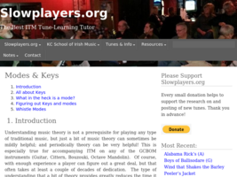 |
http://slowplayers.org/modes-keys/ |
| 80 |
 |
http://soltem.livejournal.com/98994.html |
| 81 |
 |
http://stevehanov.ca/blog/index.php?id=132 |
| 82 |
 |
http://taotechingdecoded.com/PU/Reverse_Thinking.html |
| 83 |
 |
http://thecodingtrain.com/ |
| 84 |
 |
http://unomoralez.com/img.html |
| 85 |
 |
http://varianceexplained.org/r/trump-tweets/ |
| 86 |
 |
http://verlagmartinkoch.at/software/dither/index.html |
| 87 |
 |
http://vetii.github.io/posts/zettelkasten/ |
| 88 |
 |
http://vk.com/brandrussia |
| 89 |
 |
http://vsevolodustinov.ru/blog/all/ezhednevny-lichny-chek-list/ |
| 90 |
 |
http://web.archive.org/web/20050828014056[1](http://firstmonday.org/issues/issue4_10/bezroukov/index.html) |
| 91 |
 |
http://weigert.vsos.ethz.ch/ |
| 92 |
 |
http://widgetsandshit.com/teddziuba/2010/10/taco-bell-programming.html |
| 93 |
 |
http://writing2.richmond.edu/writing/wweb/music/notetaking.html |
| 94 |
 |
http://www.2dgameartguru.com/2017/01/character-design-some-tips-and-tricks.html |
| 95 |
 |
http://www.arteveryday.org/brodskij-i-utkin-bumazhnaya-arxitektura/ |
| 96 |
 |
http://www.artofmanliness.com/2015/05/13/kids-and-allowance/ |
| 97 |
 |
http://www.asia.si.edu/collections/edan/object.php?q=fsg_FSC-PA-19&bcrumb=true |
| 98 |
 |
http://www.asimovinstitute.org/neural-network-zoo/ |
| 99 |
 |
http://www.bit-101.com/blog/ |
| 100 |
 |
http://www.brightspiral.com/img/adventure/ |
| 101 |
 |
http://www.bulletproofmusician.com/is-it-true-that-theres-a-way-to-learn-skills-twice-as-fast/ |
| 102 |
 |
http://www.bulletproofmusician.com/lazy-smart-persons-guide-mastering-self-control/ |
| 103 |
 |
http://www.bulletproofmusician.com/pettlep-a-7-point-how-to-guide-for-visualization/ |
| 104 |
 |
http://www.bzarg.com/p/how-a-kalman-filter-works-in-pictures/ |
| 105 |
 |
http://www.catb.org/%7Eesr/faqs/smart-questions.html |
| 106 |
 |
http://www.catb.org/esr/faqs/hacker-howto.html |
| 107 |
 |
http://www.complexification.net/gallery/ |
| 108 |
 |
http://www.daedtech.com/salary-negotiations-win-by-losing/ |
| 109 |
 |
http://www.datasciencecentral.com/profiles/blogs/10-types-of-regressions-which-one-to-use |
| 110 |
 |
http://www.dimensions-math.org/Dim_RU.htm |
| 111 |
 |
http://www.elementsofprogramming.com/ |
| 112 |
 |
http://www.evanmiller.org/how-not-to-sort-by-average-rating.html |
| 113 |
 |
http://www.evanmiller.org/small-data.html |
| 114 |
 |
http://www.evanmiller.org/the-software-scientist.html |
| 115 |
 |
http://www.guitarshilin.ru/chords.html |
| 116 |
 |
http://www.jagregory.com/writings/converting-and-preserving-michael-abrash-graphics-programming-black-book |
| 117 |
 |
http://www.jbott.com/charles.html |
| 118 |
 |
http://www.jbott.com/index.html |
| 119 |
 |
http://www.jbott.com/osusana1.html |
| 120 |
 |
http://www.jennyodell.com/writing.html |
| 121 |
 |
http://www.kevinlucbert.com/index.php?/mythes/au-coeur-des-tenebres/ |
| 122 |
 |
http://www.levity.com/alchemy/rosary1.html |
| 123 |
 |
http://www.lindyladder.com/ |
| 124 |
 |
http://www.lofibucket.com/articles/64k_intro.html |
| 125 |
 |
http://www.loyalbooks.com/language/Latin |
| 126 |
 |
http://www.lua.org/wshop14.html |
| 127 |
 |
http://www.manythings.org/banjo/tunes/ |
| 128 |
 |
http://www.milchior.fr/blog_en/index.php/post/2019/05/04/Anki-and-learning-which-require-practice-%28origami%2C-knot%2C-instrument…%29 |
| 129 |
 |
http://www.milchior.fr/blog_en/index.php/post/2019/05/05/Learning-how-to-play-music-with-anki |
| 130 |
 |
http://www.milchior.fr/blog_en/index.php/post/2020/01/22/How-I-learn-lyrics-with-anki |
| 131 |
 |
http://www.nathalielawhead.com/candybox/ |
| 132 |
 |
http://www.nathalielawhead.com/candybox/a-retrospective-on-the-electric-zine-maker-making-tools-sharing-the-numbers-and-more-after-launching-the-really-big-update |
| 133 |
 |
http://www.nathalielawhead.com/candybox/talk-transcript-spring-2021-ossta-lecture-series-my-talk-on-tiny-non-commercial-tools-fantasy-consoles-and-tools-as-games |
| 134 |
 |
http://www.nathalielawhead.com/candybox/tiny-tools-and-the-ephemeral-nature-of-digital-art |
| 135 |
 |
http://www.natureofcode.com |
| 136 |
 |
http://www.nigelgatherer.com/tunes/tunes/F/FlowE.html |
| 137 |
 |
http://www.offbeatband.com/2009/10/listening-intentionally-a-higher-level-of-music-study/ |
| 138 |
 |
http://www.offbeatband.com/2010/01/how-to-memorize-songs/ |
| 139 |
 |
http://www.offbeatband.com/2011/04/how-to-figure-songs-out-rhythm-guitar-and-chord-progressions/ |
| 140 |
 |
http://www.opowell.com/post/talks-that-changed-the-way-i-think-about-programming/ |
| 141 |
 |
http://www.oracle.com/us/products/database/odm-techniques-algorithms-097163.html |
| 142 |
 |
http://www.photonstorm.com/art/tutorials-art/16x16-pixel-art-tutorial |
| 143 |
 |
http://www.plusultra.ninja/monstr.html |
| 144 |
 |
http://www.projectvixen.com/zen.htm |
| 145 |
 |
http://www.prometa.pro/ |
| 146 |
 |
http://www.rexegg.com/regex-best-trick.html |
| 147 |
 |
http://www.sirlin.net/ptw |
| 148 |
 |
http://www.slideshare.net/billkarwin/sql-antipatterns-strike-back |
| 149 |
 |
http://www.socher.org/index.php/DeepLearningTutorial/DeepLearningTutorial |
| 150 |
 |
http://www.stargrave.org/Mirroring.html |
| 151 |
 |
http://www.stargrave.org/index.html |
| 152 |
 |
http://www.statisticsdonewrong.com/ |
| 153 |
 |
http://www.stevemcconnell.com/rd.htm |
| 154 |
 |
http://www.svob.narod.ru/abaev/chancultura.htm |
| 155 |
 |
http://www.tbanjo.com/2011/07/rhythm-tenor-banjo-strumming-mandolin.html |
| 156 |
 |
http://www.tbanjo.com/2012/01/learning-irish-and-oldtime-fiddle-tunes.html |
| 157 |
 |
http://www.tbanjo.com/2012/03/making-most-of-practice-time.html |
| 158 |
 |
http://www.tbanjo.com/2012/10/how-to-teach-yourself-tune-music-tip.html#comment-form |
| 159 |
 |
http://www.tbanjo.com/2014/02/lilting-solfege.html#comment-form |
| 160 |
 |
http://www.tbanjo.com/2014/05/natalie-goldbergs-writing-down-bones-as.html#comment-form |
| 161 |
|
http://www.tbanjo.com/2014/08/the-importance-of-ear-training-in.html |
| 162 |
|
http://www.tbanjo.com/2014/09/an-excerpt-from-matt-glasers-ear.html |
| 163 |
|
http://www.tbanjo.com/2014/09/learning-how-to-learn-with-barbara.html |
| 164 |
 |
http://www.tbanjo.com/search/label/Playing%20Tips |
| 165 |
 |
http://www.the-village.ru/village/service-shopping/price-quality/174877-gde-kupit-chyornyy-plasch |
| 166 |
 |
http://www.tomgauld.com/ |
| 167 |
 |
http://www.tylerlhobbs.com/writings |
| 168 |
 |
http://www.wayz.co.nz/store/memory/make-your-own-memory-journal |
| 169 |
 |
http://www.wayz.co.nz/store/memory/planning-remember |
| 170 |
 |
http://www.wayz.co.nz/store/study/effective-notetaking |
| 171 |
 |
http://www.zachtronics.com/ |
| 172 |
 |
http://yeokhengmeng.com/2019/12/building-a-new-win-3-1-app-in-2019-part-1-slack-client/ |
| 173 |
 |
https://4brain.ru/blog/%D0%B2%D0%B5%D0%B4%D0%B5%D0%BD%D0%B8%D0%B5-%D0%B4%D0%BD%D0%B5%D0%B2%D0%BD%D0%B8%D0%BA%D0%B0/ |
| 174 |
 |
https://abdullin.com/beautiful-tech-debt/ |
| 175 |
 |
https://acomics.ru/~alfie/1 |
| 176 |
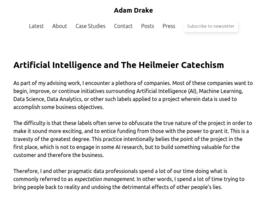 |
https://adamdrake.com/artificial-intelligence-and-the-heilmeier-catechism.html |
| 177 |
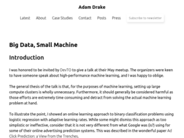 |
https://adamdrake.com/big-data-small-machine.html |
| 178 |
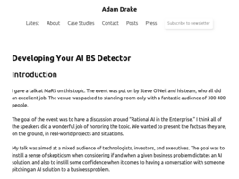 |
https://adamdrake.com/developing-your-ai-bs-detector.html |
| 179 |
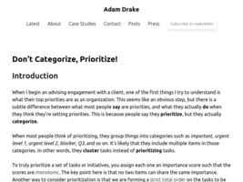 |
https://adamdrake.com/dont-categorize-prioritize.html |
| 180 |
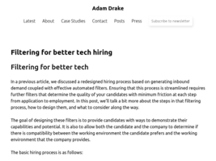 |
https://adamdrake.com/filtering-for-better-tech-hiring.html |
| 181 |
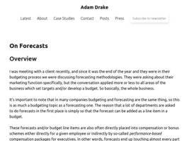 |
https://adamdrake.com/on-forecasts.html |
| 182 |
|
https://adamdrake.com/what-is-your-current-salary.html |
| 183 |
 |
https://adamj.eu/tech/2021/10/08/tips-for-debugging-with-print/ |
| 184 |
 |
https://add0n.com/save-images.html?version=0.7.8&p=0.7.7&type=update |
| 185 |
 |
https://adr.github.io/ |
| 186 |
|
https://adreagarzia.com/2021/01/lua-a-misunderstood-language.html |
| 187 |
 |
https://affinelayer.com/pixsrv/ |
| 188 |
 |
https://alfalady.org/samorazvitie/326-kak-napisat-pesnyu.html |
| 189 |
 |
https://alienmelon.itch.io/ |
| 190 |
 |
https://altsoph.medium.com/ |
| 191 |
 |
https://amdm.ru/akkordi/otava_yo/172640/oy_dusya_oy_marusya/ |
| 192 |
 |
https://amir.rachum.com/blog/2019/06/23/retrospectives/ |
| 193 |
 |
https://amir.rachum.com/blog/2020/06/25/cheat-sheet/ |
| 194 |
 |
https://amir.rachum.com/blog/2021/10/16/capturing-thoughts/ |
| 195 |
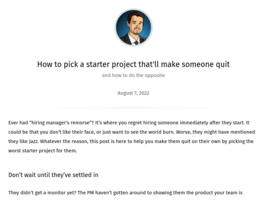 |
https://amir.rachum.com/blog/2022/08/07/starter-project/ |
| 196 |
 |
https://anairos.livejournal.com/195423.html?view=comments#comments |
| 197 |
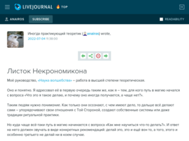 |
https://anairos.livejournal.com/232428.html |
| 198 |
 |
https://andrewzah.com/posts/2019/better-anki-usage-guide/ |
| 199 |
 |
https://andrewzah.com/posts/2019/korean_for_programmers/ |
| 200 |
 |
https://angelika.me/2021/11/23/7-gettext-lessons-after-2-years/ |
| 201 |
 |
https://ankiweb.net/shared/info/2084557901 |
| 202 |
 |
https://antonkim.ru/blog/all/my-audio-diary/ |
| 203 |
 |
https://antonkim.ru/blog/page-2/ |
| 204 |
 |
https://anujsyal.com/gpt-3-the-latest-language-model-in-ai-c8634a314911 |
| 205 |
 |
https://anvaka.github.io/common-words/#?lang=js |
| 206 |
 |
https://archive.org/details/computermagazines?&sort=-week&page=4 |
| 207 |
 |
https://ardour.org/features.html |
| 208 |
 |
https://areena.yle.fi/tv/suorat/yle-tv1 |
| 209 |
 |
https://arpitbhayani.me/blogs/genetic-knapsack |
| 210 |
 |
https://arpitbhayani.me/blogs/udemy-sql-taxonomy |
| 211 |
 |
https://arzamas.academy/micro/alkhimia |
| 212 |
 |
https://askubuntu.com/questions/147052/step-by-step-to-run-a-midi-keyboard-input-device-12-04 |
| 213 |
 |
https://askubuntu.com/questions/628235/highest-quality-sampler-synthesizer-in-ubuntu |
| 214 |
 |
https://askubuntu.com/questions/65951/how-to-disable-the-touchpad |
| 215 |
|
https://austinhenley.com/blog.html |
| 216 |
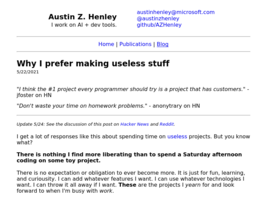 |
https://austinhenley.com/blog/makinguselessstuff.html |
| 217 |
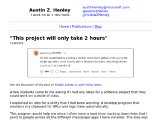 |
https://austinhenley.com/blog/thisprojectwillonlytake.html |
| 218 |
 |
https://author.today/reader/158625/1291086 |
| 219 |
 |
https://author.today/work/158625 |
| 220 |
 |
https://automatetheboringstuff.com/#toc |
| 221 |
 |
https://automattic.design/2018/10/02/what-makes-us-creative/ |
| 222 |
 |
https://awsmtv.com/ |
| 223 |
 |
https://bartwronski.com/2019/08/14/how-not-to-test-graphics-algorithms/ |
| 224 |
 |
https://benhoyt.com/writings/the-small-web-is-beautiful/ |
| 225 |
 |
https://betterprogramming.pub/my-2-cents-on-mental-health-for-programmers-40086ec3d3 |
| 226 |
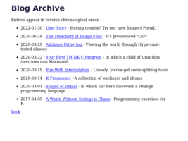 |
https://beyondloom.com/blog/ |
| 227 |
 |
https://biography.wikireading.ru/6874 |
| 228 |
 |
https://bitfieldconsulting.com/golang/test-last-development |
| 229 |
 |
https://bits.ashleyblewer.com/halt-and-catch-fire-syllabus/ |
| 230 |
 |
https://bitsquest.bitbucket.io/index.html?#0 |
| 231 |
 |
https://blog.benjojo.co.uk/post/encoding-data-into-dubstep-drops |
| 232 |
 |
https://blog.bitsrc.io/automatic-batching-in-react-18-what-you-should-know-d50141dc096e |
| 233 |
 |
https://blog.bytebytego.com/p/diagram-as-code?triedSigningIn=true |
| 234 |
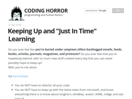 |
https://blog.codinghorror.com/keeping-up-and-just-in-time-learning/ |
| 235 |
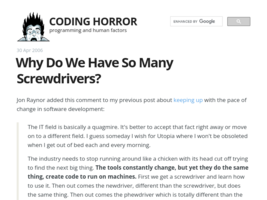 |
https://blog.codinghorror.com/why-do-we-have-so-many-screwdrivers/ |
| 236 |
 |
https://blog.demofox.org/2017/07/25/counting-bits-the-normal-distribution/ |
| 237 |
 |
https://blog.devgenius.io/why-low-code-development-tools-will-not-result-in-80-of-software-being-created-by-citizen-ad6143a60e48 |
| 238 |
 |
https://blog.djy.io/10-bash-quirks-and-how-to-live-with-them/ |
| 239 |
 |
https://blog.farazshaikh.com/stories/rendering-1-m-particles/ |
| 240 |
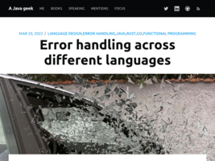 |
https://blog.frankel.ch/error-handling/ |
| 241 |
 |
https://blog.insightdatascience.com/how-to-solve-90-of-nlp-problems-a-step-by-step-guide-fda605278e4e |
| 242 |
 |
https://blog.jim-nielsen.com/2021/useful-and-usless-code-comments/ |
| 243 |
 |
https://blog.monkeylearn.com/a-gentle-guide-to-machine-learning/ |
| 244 |
 |
https://blog.nelhage.com/post/some-opinionated-sql-takes/ |
| 245 |
 |
https://blog.openreplay.com/typescript-done-wrong |
| 246 |
 |
https://blog.plover.com/lang/ |
| 247 |
 |
https://blog.polarcoder.net/2021/08/simple-code-naming-things.html |
| 248 |
 |
https://blog.professorbeekums.com/2021/interview-performance/ |
| 249 |
 |
https://blog.royalsloth.eu/posts/it-takes-a-phd-to-develop-that/ |
| 250 |
 |
https://blog.soshace.com/list-of-coding-games-to-practice-improve-your-programming-skills/ |
| 251 |
 |
https://blog.woubuc.be/post/self-documenting-code-is-a-myth/ |
| 252 |
 |
https://blogs.mathworks.com/headlines/2016/09/08/this-56-year-old-algorithm-is-key-to-space-travel-gps-vr-and-more/?utm_source=mybridge&utm_medium=email&utm_campaign=read_more |
| 253 |
 |
https://blogs.uoregon.edu/4dbio/2013/08/08/you-can-only-have-three-hobbies-as-a-scientist-and-you-should/ |
| 254 |
 |
https://bobdoto.computer/progressive-summarization-and-zettelkasten |
| 255 |
 |
https://bobek.cz/blog/2021/written-standup/ |
| 256 |
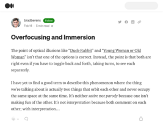 |
https://bradberens.medium.com/overfocusing-and-immersion-e415ffb5a799 |
| 257 |
 |
https://brendan-power.com/instruction.php#view3 |
| 258 |
 |
https://briskreader.com/?url=https://thinkingthrough.substack.com/p/dont-do-interviews-do-discussions |
| 259 |
 |
https://brothersarntzen.bandcamp.com/ |
| 260 |
 |
https://brunodias.dev/2021/03/19/functions-for-system-designers.html |
| 261 |
 |
https://buffer.com/resources/side-projects-creative-hobbies/ |
| 262 |
 |
https://bugs.xdavidhu.me/google/2021/04/05/i-built-a-tv-that-plays-all-of-your-private-youtube-videos/ |
| 263 |
 |
https://bulletjournal.com/blogs/bulletjournalist/learning-and-note-taking |
| 264 |
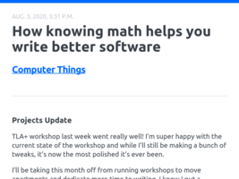 |
https://buttondown.email/hillelwayne/archive/how-knowing-math-helps-you-write-better-software/ |
| 265 |
|
https://buttondown.email/hillelwayne/archive/search-less-browse-more-7595/ |
| 266 |
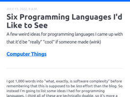 |
https://buttondown.email/hillelwayne/archive/six-programming-languages-id-like-to-see/ |
| 267 |
 |
https://buttondown.email/hillelwayne/archive/the-esotech-lit-gap/ |
| 268 |
 |
https://buttondown.email/hillelwayne/archive/you-can-automate-more-than-you-think/ |
| 269 |
 |
https://bytesizetheories.com/posts/3-kinds-of-tech-debt/ |
| 270 |
 |
https://c2.staticflickr.com/6/5461/17356906540_bf67c15fd3_h.jpg |
| 271 |
 |
https://carolinareapersswing.bandcamp.com/album/unseasonably-hot |
| 272 |
 |
https://caseymuratori.com/blog_0015 |
| 273 |
 |
https://caseymuratori.com/blog_0016 |
| 274 |
 |
https://caseymuratori.com/blog_0024 |
| 275 |
 |
https://casual-effects.com/markdeep/#getstarted |
| 276 |
 |
https://caylent.com/culture-resilience-engineering/ |
| 277 |
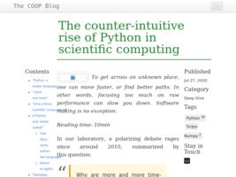 |
https://cerfacs.fr/coop/fortran-vs-python |
| 278 |
 |
https://cheapbotsdonequick.com/ |
| 279 |
 |
https://chriskiehl.com/article/thoughts-after-6-years |
| 280 |
 |
https://christianheilmann.com/2021/11/01/developer-tools-secrets-that-shouldnt-be-secrets/ |
| 281 |
 |
https://christiantietze.de/posts/ |
| 282 |
 |
https://clawhammerbanjo.net/8steps/ |
| 283 |
 |
https://codeahoy.com/2021/10/01/software-developer-burn-out-survey/ |
| 284 |
 |
https://codeburst.io/10-javascript-concepts-you-need-to-know-for-interviews-136df65ecce |
| 285 |
 |
https://cognitect.com/blog/2011/11/15/documenting-architecture-decisions |
| 286 |
 |
https://commoncog.com/blog/how-note-taking-can-help-you-become-an-expert/ |
| 287 |
 |
https://commons.wikimedia.org/wiki/File:Piano_waveform_reconstructed.svg |
| 288 |
 |
https://console.substack.com/ |
| 289 |
 |
https://controlaltbackspace.org/memory/introduction-to-mnemonics/ |
| 290 |
 |
https://controlaltbackspace.org/simplicity/digital-minimalism/ |
| 291 |
 |
https://controlaltbackspace.org/simplicity/everythings-broken-everythings-too-complicated/ |
| 292 |
 |
https://corecursive.com/065-competitive-coding-with-conor-hoekstra/ |
| 293 |
 |
https://corpuscula.blogspot.ru/2016/04/blog-post_23.html#comment-form |
| 294 |
 |
https://corpuscula.blogspot.ru/2017/01/100-jwt-2017.html#comment-form |
| 295 |
 |
https://cp4space.hatsya.com/2022/01/14/conway-conjecture-settled/ |
| 296 |
 |
https://cprimozic.net/blog/programming-speed-strategies/ |
| 297 |
 |
https://css-tricks.com/snippets/css/complete-guide-grid/ |
| 298 |
 |
https://cuddly-octo-palm-tree.com/posts/2021-06-13-church-turing/ |
| 299 |
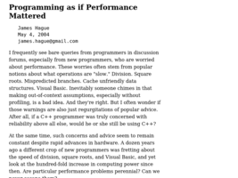 |
https://dadgum.com/james/performance.html |
| 300 |
 |
https://danielcompton.net/2015/06/11/james-mickens-collection |
| 301 |
 |
https://danluu.com/productivity-velocity/ |
| 302 |
|
https://danmackinlay.name/ |
| 303 |
 |
https://dannorth.net/2021/07/26/we-need-to-talk-about-testing/ |
| 304 |
 |
https://dannorth.net/2022/02/10/cupid-for-joyful-coding/ |
| 305 |
 |
https://dansilvestre.com/brain-dump/ |
| 306 |
 |
https://dataedo.com/blog/why-it-is-more-important-to-document-database-than-application-code |
| 307 |
 |
https://deadlockempire.github.io/#T1-Interface |
| 308 |
 |
https://denvaar.github.io/articles/how_to_review_code.html |
| 309 |
 |
https://designforhackers.com/ |
| 310 |
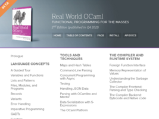 |
https://dev.realworldocaml.org/ |
| 311 |
 |
https://devblog.blackberry.com/en/2021/05/learning-to-love-a-rigid-and-inflexible-language |
| 312 |
 |
https://devblogs.nvidia.com/parallelforall/ai-cat-chaser-jetson-tx1-caffe/ |
| 313 |
 |
https://deyvidyfs.medium.com/defensive-programming-or-a-study-on-how-to-become-a-better-software-engineer-9079ffdddfe5 |
| 314 |
 |
https://dezz.ie/web-history/letting-go-of-the-old-web/ |
| 315 |
 |
https://digitalmars.com/articles/b14.html |
| 316 |
 |
https://digitalmars.com/articles/b39.html |
| 317 |
 |
https://digitalmars.com/articles/b40.html |
| 318 |
 |
https://dirtywave.com/products/m8-tracker |
| 319 |
 |
https://divan.leprosorium.ru/comments/2450516/ |
| 320 |
 |
https://dl.acm.org/doi/10.1145/3469128 |
| 321 |
 |
https://dlang.org/blog/2021/06/01/driving-with-d/ |
| 322 |
 |
https://docs.microsoft.com/en-us/azure/machine-learning/machine-learning-algorithm-choice |
| 323 |
 |
https://docs.microsoft.com/en-us/windows-hardware/drivers/debugger/enabling-postmortem-debugging |
| 324 |
 |
https://doriantaylor.com/agile-as-trauma |
| 325 |
 |
https://dorinlazar.ro/2021-02-programming-is-hard/ |
| 326 |
 |
https://drbanjo.com/best-ways/ |
| 327 |
 |
https://dreamsongs.com/WorseIsBetter.html |
| 328 |
 |
https://dtf.ru/gamedev/228891-sketchi-luchshiy-sposob-nauchitsya-risovat-chto-ugodno |
| 329 |
 |
https://duckduckgo.com/?t=ffab&q=%D0%BA%D0%BE%D0%B3%D0%B4%D0%B0+%D1%85%D0%BE%D1%87%D0%B5%D1%82%D1%81%D1%8F+%D0%B2%D1%81%D1%91+%D0%B2%D1%8B%D0%B1%D1%80%D0%BE%D1%81%D0%B8%D1%82%D1%8C&ia=web |
| 330 |
 |
https://duckduckgo.com/?t=ffcm&q=%D0%94%D1%8E%D1%80%D1%80%D0%B5%D0%BD%D0%BC%D0%B0%D1%82%D1%82&ia=web |
| 331 |
 |
https://duckduckgo.com/?t=ffcm&q=Dinosauruksii+-+Ellinoora&ia=web |
| 332 |
 |
https://duckduckgo.com/?t=ffcm&q=Ikuinen+Vappu+-+Jvg&ia=web |
| 333 |
 |
https://duckduckgo.com/?t=ffcm&q=Mira+Calligraphiae+Monumenta&ia=web |
| 334 |
 |
https://duckduckgo.com/?t=ffcm&q=Roy+Orbison+-+Stig&ia=web |
| 335 |
 |
https://duckduckgo.com/?t=ffcm&q=Trick+Me+-+Kelis&ia=web |
| 336 |
 |
https://dzone.com/articles/lessons-learned-from-programming-at-google-w-hyrum |
| 337 |
 |
https://dzone.com/articles/observability-its-not-what-you-think |
| 338 |
 |
https://earthly.dev/blog/awk-examples/ |
| 339 |
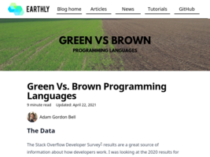 |
https://earthly.dev/blog/brown-green-language/ |
| 340 |
 |
https://earthly.dev/blog/jq-select/ |
| 341 |
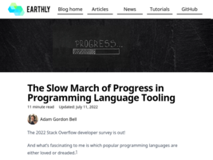 |
https://earthly.dev/blog/programming-language-improvements/ |
| 342 |
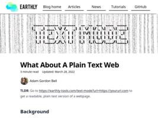 |
https://earthly.dev/blog/text-mode/ |
| 343 |
 |
https://ediefreedman.blogspot.com/2011/06/fall-in-love-with-your-life.html |
| 344 |
 |
https://emreed.net/ |
| 345 |
 |
https://emreed.net/LowTech_Directory.html |
| 346 |
 |
https://en.wikipedia.org/wiki/AI_winter |
| 347 |
 |
https://en.wikipedia.org/wiki/Battle_of_the_Teutoburg_Forest |
| 348 |
 |
https://en.wikipedia.org/wiki/Bottom%27s_Dream |
| 349 |
|
https://en.wikipedia.org/wiki/Christoper_Alexander |
| 350 |
 |
https://en.wikipedia.org/wiki/Common_Logic |
| 351 |
 |
https://en.wikipedia.org/wiki/Essentials_of_Programming_Languages |
| 352 |
|
https://en.wikipedia.org/wiki/Ewan_MacColl |
| 353 |
 |
https://en.wikipedia.org/wiki/Graph_drawing |
| 354 |
 |
https://en.wikipedia.org/wiki/Graphviz |
| 355 |
 |
https://en.wikipedia.org/wiki/I%27m_a_Cyborg,_But_That%27s_OK |
| 356 |
 |
https://en.wikipedia.org/wiki/J._B._Priestley |
| 357 |
 |
https://en.wikipedia.org/wiki/Jug_Band_Hokum |
| 358 |
 |
https://en.wikipedia.org/wiki/Knowledge_management |
| 359 |
 |
https://en.wikipedia.org/wiki/Method_of_loci |
| 360 |
 |
https://en.wikipedia.org/wiki/Monte_Carlo_tree_search |
| 361 |
 |
https://en.wikipedia.org/wiki/Multiple-criteria_decision_analysis |
| 362 |
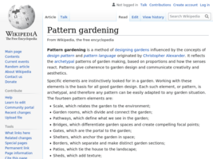 |
https://en.wikipedia.org/wiki/Pattern_gardening |
| 363 |
 |
https://en.wikipedia.org/wiki/Pattern_language |
| 364 |
 |
https://en.wikipedia.org/wiki/Robustness_principle |
| 365 |
 |
https://en.wikipedia.org/wiki/Self-documenting_code |
| 366 |
 |
https://en.wikipedia.org/wiki/The_Boyne_Water |
| 367 |
 |
https://en.wikipedia.org/wiki/The_City_Waites |
| 368 |
 |
https://en.wikipedia.org/wiki/The_Hanging_Tree_(The_Hunger_Games_song) |
| 369 |
 |
https://estebanhufstedler.com/about-me/ |
| 370 |
 |
https://eugeneyan.com/writing/note-taking-zettelkasten/ |
| 371 |
 |
https://eugeneyan.com/writing/why-read-papers/ |
| 372 |
 |
https://eugeneyan.com/writing/why-you-need-to-follow-up-after-your-data-science-project/ |
| 373 |
 |
https://eugeneyan.com/writing/writing-docs-why-what-how/ |
| 374 |
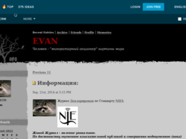 |
https://evan-gcrm.livejournal.com/ |
| 375 |
 |
https://evchapman.com/atomic-essays/i-quit-productivity-now-i-get-far-more-done-every-day |
| 376 |
 |
https://everest-pipkin.com/#drawings/eye.html |
| 377 |
 |
https://feldy.ru/read/ |
| 378 |
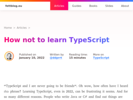 |
https://fettblog.eu/how-not-to-learn-typescript/ |
| 379 |
 |
https://fortelabs.co/blog/series/ps/ |
| 380 |
 |
https://forum.zettelkasten.de/discussion/106/paper-based-zettelkasten-processes-for-problem-solving |
| 381 |
 |
https://forum.zettelkasten.de/discussion/1140/putting-in-time-to-create-a-zettelkasten-though-what-is-your-output |
| 382 |
 |
https://forum.zettelkasten.de/discussion/1946/using-a-zettelkasten-in-mathematics-research |
| 383 |
 |
https://forum.zettelkasten.de/discussion/comment/12802/#Comment_12802 |
| 384 |
 |
https://fperrad.frama.io/#articles |
| 385 |
 |
https://freeology.com/articles/7-note-taking-tips/ |
| 386 |
 |
https://frinklang.org/#JavaWebStart |
| 387 |
 |
https://frontendmasters.gitbooks.io/front-end-handbook-2017/content/ |
| 388 |
|
https://fs.blog/compounding-knowledge/ |
| 389 |
|
https://fs.blog/decision-journal/ |
| 390 |
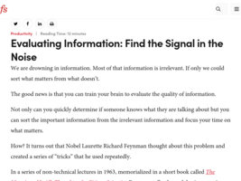 |
https://fs.blog/evaluating-information/ |
| 391 |
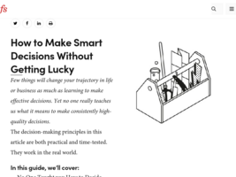 |
https://fs.blog/smart-decisions/ |
| 392 |
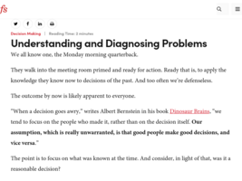 |
https://fs.blog/understanding-and-diagnosing-problems/ |
| 393 |
 |
https://funloop.org/post/2015-02-27-removing-modulo-bias-redux.html |
| 394 |
 |
https://funloop.org/post/2015-06-25-urxvt-plugins.html |
| 395 |
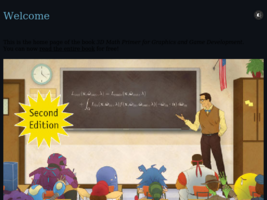 |
https://gamemath.com/ |
| 396 |
 |
https://gamestracker.org/ |
| 397 |
 |
https://gcollazo.com/logging-is-important/ |
| 398 |
 |
https://generated.space/ |
| 399 |
 |
https://generateme.wordpress.com/ |
| 400 |
 |
https://generativeartistry.com/tutorials/piet-mondrian/ |
| 401 |
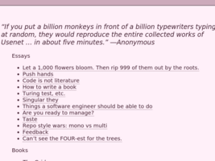 |
https://gigamonkeys.com/ |
| 402 |
|
https://gigamonkeys.com/book/ |
| 403 |
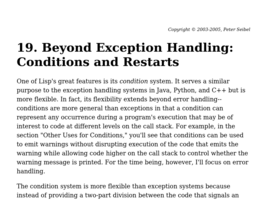 |
https://gigamonkeys.com/book/beyond-exception-handling-conditions-and-restarts.html |
| 404 |
 |
https://gist.github.com/edmundsmith/1876aa1c014c4b8ce4ab4cfabcb1c497 |
| 405 |
 |
https://github.com/Jaxo/yaxx |
| 406 |
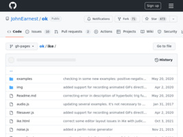 |
https://github.com/JohnEarnest/ok/tree/gh-pages/ike |
| 407 |
 |
https://github.com/Sairyss/domain-driven-hexagon#general-recommendations-on-architectures-best-practices-design-patterns-and-principles |
| 408 |
 |
https://github.com/adnzzzzZ/blog |
| 409 |
 |
https://github.com/adnzzzzZ/blog/issues/37 |
| 410 |
 |
https://github.com/adrianscheff/useful-sed |
| 411 |
 |
https://github.com/antonmedv/fx |
| 412 |
 |
https://github.com/arielf/weight-loss |
| 413 |
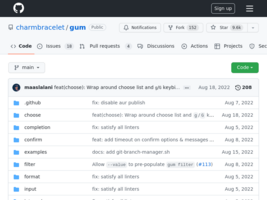 |
https://github.com/charmbracelet/gum |
| 414 |
 |
https://github.com/chjj/compton |
| 415 |
 |
https://github.com/creative-coding-with-processing |
| 416 |
|
https://github.com/davidesantangelo/dato.rss |
| 417 |
 |
https://github.com/dbartolini/data-oriented-design |
| 418 |
 |
https://github.com/donnemartin/system-design-primer |
| 419 |
 |
https://github.com/erdavids/Generative-Art |
| 420 |
 |
https://github.com/ibraheemdev/modern-unix |
| 421 |
 |
https://github.com/ibraheemdev/modern-unix/blob/master/README.md |
| 422 |
 |
https://github.com/jemmybutton/fiziko |
| 423 |
 |
https://github.com/jhspetersson/fselect |
| 424 |
 |
https://github.com/kilimchoi/engineering-blogs |
| 425 |
 |
https://github.com/koalaman/shellcheck |
| 426 |
 |
https://github.com/kristopolous/BOOTSTRA.386 |
| 427 |
 |
https://github.com/lubyk/lubyk |
| 428 |
 |
https://github.com/lubyk/lubyk/commits?author=lilybucher |
| 429 |
 |
https://github.com/lyokha/vim-xkbswitch |
| 430 |
 |
https://github.com/mermaid-js/mermaid |
| 431 |
 |
https://github.com/mxgmn/SynTex |
| 432 |
 |
https://github.com/norvig/paip-lisp |
| 433 |
 |
https://github.com/novoid/filetags#tagtrees |
| 434 |
 |
https://github.com/novoid/memacs |
| 435 |
 |
https://github.com/robert/wavefunction-collapse |
| 436 |
 |
https://github.com/sachaos/viddy |
| 437 |
 |
https://github.com/stars/Grauenwolf/lists/cleaning-clean-architecture |
| 438 |
 |
https://github.com/tum-esi/common-coding-conventions |
| 439 |
 |
https://github.com/vinibiavatti1/TuiCss |
| 440 |
 |
https://github.com/willianjusten/awesome-audio-visualization |
| 441 |
 |
https://github.com/you-dont-need/You-Dont-Need |
| 442 |
 |
https://github.com/zeta0134/LuaGB |
| 443 |
 |
https://gitlab.com/slackermedia/bashcrawl/-/tree/master/entrance |
| 444 |
 |
https://glenncrytzercompilations.bandcamp.com/album/that-new-old-sound |
| 445 |
 |
https://gobeforegreen.com/scanner-daybook/ |
| 446 |
|
https://growsmethod.com/ |
| 447 |
 |
https://grubgrain.dev/ |
| 448 |
 |
https://habr.com/en/post/421563/#comment_19050001 |
| 449 |
 |
https://habr.com/ru/company/ruvds/blog/517450/ |
| 450 |
 |
https://habr.com/ru/company/shkolnaya_karta/blog/377109/ |
| 451 |
 |
https://habr.com/ru/post/461365/* |
| 452 |
 |
https://habr.com/ru/post/485578/ |
| 453 |
 |
https://habr.com/ru/post/527860/ |
| 454 |
 |
https://habrahabr.ru/post/192320/ |
| 455 |
 |
https://hackaday.com/2019/03/05/good-code-documents-itself-and-other-hilarious-jokes-you-shouldnt-tell-yourself/ |
| 456 |
 |
https://hackernoon.com/computed-state-the-model-view-problem-9cbe8cf8486f#.mbjol0t46 |
| 457 |
 |
https://hacks.mozilla.org/2021/08/mdns-autocomplete-search/ |
| 458 |
 |
https://hakibenita.com/sql-anomaly-detection |
| 459 |
 |
https://hbr.org/2013/04/what-job-candidates-really-wan |
| 460 |
 |
https://healeycodes.com/boids-flocking-simulation/ |
| 461 |
 |
https://healeycodes.com/book-review-the-developers-guide-to-content-creation/ |
| 462 |
 |
https://healeycodes.com/generating-text-with-markov-chains/ |
| 463 |
 |
https://healeycodes.com/github/beginners/tutorial/productivity/2019/04/14/writing-an-awesome-github-readme.html |
| 464 |
 |
https://healeycodes.com/hacking-together-an-e-ink-dashboard/ |
| 465 |
 |
https://healeycodes.com/learning-the-ink-programming-language/ |
| 466 |
 |
https://helix-editor.com/ |
| 467 |
 |
https://henrikwarne.com/2014/06/30/what-makes-a-good-programmer/ |
| 468 |
 |
https://henrikwarne.com/2016/06/16/18-lessons-from-13-years-of-tricky-bugs/ |
| 469 |
 |
https://hinty.io/devforth/sql-query-optimization-understanding-key-principle/ |
| 470 |
 |
https://hirrolot.github.io/posts/expression-oriented-programming-in-c-the-fmt-macro.html |
| 471 |
 |
https://hirrolot.github.io/posts/extend-your-language-dont-alter-it.html |
| 472 |
 |
https://history.wikireading.ru/102902 |
| 473 |
 |
https://holub.com/heuristics-for-effective-software-development-a-continuously-evolving-list/ |
| 474 |
 |
https://hotsugarband.bandcamp.com/album/swing-for-dancers |
| 475 |
 |
https://htdp.org/2018-01-06/Book/index.html |
| 476 |
 |
https://iism.org/article/is-tasking-developers-with-creating-detailed-estimates-a-waste-of-company-money-42 |
| 477 |
|
https://imgur.com/gallery/7Fgldqc |
| 478 |
|
https://imgur.com/gallery/c4qAUv4 |
| 479 |
 |
https://imgur.com/t/drawing |
| 480 |
|
https://inconsolation.wordpress.com/ |
| 481 |
 |
https://indiewebify.me/ |
| 482 |
 |
https://interesno.co/business/5b0639c582a2 |
| 483 |
 |
https://interesno.co/myself/31487dc9885a |
| 484 |
 |
https://interesno.co/myself/8e5724b9df49 |
| 485 |
 |
https://iquilezles.org/www/articles/fbmsdf/fbmsdf.htm |
| 486 |
 |
https://ironhead.ru/the-end-of-suffering-ppt |
| 487 |
 |
https://itnext.io/share-programming-knowledge-not-information-87e89cb35af1 |
| 488 |
 |
https://itnext.io/the-micro-frontend-chaos-and-how-to-solve-it-960b0a90c58 |
| 489 |
 |
https://iwringer.wordpress.com/2015/11/17/anomaly-detection-concepts-and-techniques/ |
| 490 |
 |
https://jacobian.org/2021/jun/2/swag-estimates/ |
| 491 |
 |
https://jacobian.org/2021/may/20/estimation/ |
| 492 |
 |
https://jakearchibald.com/2021/function-callback-risks/ |
| 493 |
 |
https://jamesclear.com/great-speeches/inventing-on-principle-by-bret-victor |
| 494 |
 |
https://javascript.plainenglish.io/the-ultimate-guide-to-writing-self-documenting-code-998ea9a38bd3 |
| 495 |
 |
https://jeang3nie.codeberg.page/case-for-modern-language-pt1/ |
| 496 |
 |
https://jeffhuang.com/best_paper_awards/ |
| 497 |
|
https://jeffhuang.com/best_paper_awards/ |
| 498 |
 |
https://jeffhuang.com/productivity_text_file/ |
| 499 |
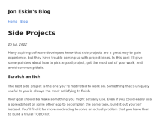 |
https://jeskin.net/blog/picking-side-projects/ |
| 500 |
 |
https://jonathanbayless.com/ |
| 501 |
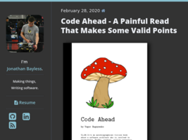 |
https://jonathanbayless.com/2020/02/28/code-ahead.html |
| 502 |
 |
https://jonathanbayless.com/2020/03/09/zettelkasten-vimwiki.html |
| 503 |
 |
https://jonathanbayless.com/2020/08/07/zettelkasten-foam.html |
| 504 |
 |
https://josephg.com/blog/crdts-go-brrr/ |
| 505 |
 |
https://journals.plos.org/ploscompbiol/article?id=10.1371/journal.pcbi.1009481 |
| 506 |
 |
https://jstrieb.github.io/projects/hidden-bookmarks/ |
| 507 |
 |
https://jvns.ca/blog/2020/06/14/questions-to-help-you-learn/ |
| 508 |
 |
https://jvns.ca/blog/learn-how-things-work/ |
| 509 |
 |
https://kadavy.net/blog/posts/zettelkasten-method-slip-box-digital-example/ |
| 510 |
 |
https://karl-voit.at/ |
| 511 |
 |
https://karl-voit.at/2018/08/25/deskop-metaphor/ |
| 512 |
 |
https://karl-voit.at/2021/01/18/tool-choices/ |
| 513 |
 |
https://karl-voit.at/folder-hierarchy/ |
| 514 |
 |
https://karl-voit.at/tags/pim/ |
| 515 |
 |
https://keepsimple.io/ru/uxcore |
| 516 |
 |
https://keyholesoftware.com/2021/02/15/four-ways-to-put-developer-experience-first/ |
| 517 |
 |
https://kislayverma.com/programming/how-to-organize-your-code/ |
| 518 |
 |
https://knife.media/richard-thaler-behavioural-economics/ |
| 519 |
 |
https://kojinka.ru/bags/rjukzaki/mujskie_rukzaki/jhon_rizh/ |
| 520 |
 |
https://kristoff.it/blog/the-open-source-game/ |
| 521 |
 |
https://kynd.github.io/p5sketches/index.html |
| 522 |
 |
https://labs.spotify.com/2014/02/28/how-to-shuffle-songs/ |
| 523 |
 |
https://ldjam.com/ |
| 524 |
 |
https://learnanylanguage.fandom.com/wiki/All_Japanese_All_The_Time |
| 525 |
 |
https://learnvimscriptthehardway.stevelosh.com/ |
| 526 |
 |
https://lethain.com/ |
| 527 |
|
https://lethain.com/how-to-safely-think-in-systems/ |
| 528 |
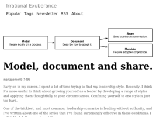 |
https://lethain.com/model-document-share/ |
| 529 |
|
https://lethain.com/personal-finances/ |
| 530 |
 |
https://levelup.gitconnected.com/introduction-to-ai-an-a-to-z-tutorial-for-building-a-basic-linear-regression-algorithm-from-ab7faea53a0b |
| 531 |
 |
https://lifehacker.ru/zachem-vesti-dnevnik-kazhdyj-den-i-kak-ne-zabrosit-svoi-zapisi/ |
| 532 |
 |
https://lifehacky.net/how-to-read-less-but-get-more-out-of-it-bf61ca062d5a |
| 533 |
 |
[https://listed.to/@crabmusket/28621/how-i-learned-oop-a-nightmare](https://listed.to/@crabmusket/28621/how-i-learned-oop-a-nightmare) |
| 534 |
 |
https://looptube.io/?videoId=IQgEUxAMyWM&start=78.34513274336295&end=84.37168141592922&rate=1 |
| 535 |
 |
https://lostgarden.home.blog/ |
| 536 |
 |
https://lubyk.github.io/lubyk/ |
| 537 |
 |
https://lucidogen.io/ |
| 538 |
 |
https://lyrics.fi/haloo-helsinki/kuussa-tuulee |
| 539 |
 |
https://macoy.me/blog/programming/InterfaceFriction |
| 540 |
 |
https://madhadron.com/posts/seven_languages.html |
| 541 |
 |
https://maggieappleton.com/garden-history |
| 542 |
 |
https://maintainable.fm/episodes/chris-birchall-re-engineering-legacy-software |
| 543 |
 |
https://maksudov.livejournal.com/ |
| 544 |
|
https://maksudov.livejournal.com/360277.html?view=comments#comments |
| 545 |
 |
https://manganato.com/manga-ii986017 |
| 546 |
 |
https://markodenic.com/html-tips/ |
| 547 |
 |
https://markodenic.com/use-console-log-like-a-pro/ |
| 548 |
 |
https://markshat.livejournal.com/398216.html |
| 549 |
 |
https://martin.ankerl.com/2009/12/09/how-to-create-random-colors-programmatically/ |
| 550 |
 |
https://martinfowler.com/articles/201701-event-driven.html |
| 551 |
 |
https://martinfowler.com/articles/patterns-of-distributed-systems/replicated-log.html |
| 552 |
 |
https://mathspp.com/blog/counting-mosaics-with-apl |
| 553 |
 |
https://matt-rickard.com/reflections-on-10-000-hours-of-programming/ |
| 554 |
 |
https://matt.might.net/articles/what-cs-majors-should-know/ |
| 555 |
 |
https://maya.land/ |
| 556 |
 |
https://media.handmade-seattle.com/practical-data-oriented-design/ |
| 557 |
 |
[https://medium.com/@Mybridge/12-free-resources-learn-to-code-while-playing-games-f7333043de11#.7quq98grj](https://medium.com/@Mybridge/12-free-resources-learn-to-code-while-playing-games-f7333043de11#.7quq98grj) |
| 558 |
 |
[https://medium.com/@ageitgey/machine-learning-is-fun-part-4-modern-face-recognition-with-deep-learning-c3cffc121d78#.igvl1h6pb](https://medium.com/@ageitgey/machine-learning-is-fun-part-4-modern-face-recognition-with-deep-learning-c3cffc121d78#.igvl1h6pb) |
| 559 |
 |
[https://medium.com/@alex.wauters/how-to-make-architecture-trade-off-decisions-cb23482e1dfe](https://medium.com/@alex.wauters/how-to-make-architecture-trade-off-decisions-cb23482e1dfe) |
| 560 |
 |
[https://medium.com/@aloukissas/programming-principles-from-id-software-bed83e762210](https://medium.com/@aloukissas/programming-principles-from-id-software-bed83e762210) |
| 561 |
 |
[https://medium.com/@bogdanandreig/how-i-have-used-machine-learning-to-build-muscles-a8aa12334c34](https://medium.com/@bogdanandreig/how-i-have-used-machine-learning-to-build-muscles-a8aa12334c34) |
| 562 |
 |
[https://medium.com/@borislaurent/stop-chasing-people-be-a-slot-machine-fcbe9e5cfed2](https://medium.com/@borislaurent/stop-chasing-people-be-a-slot-machine-fcbe9e5cfed2) |
| 563 |
 |
[https://medium.com/@ipestov/collection-of-coders-games-to-improve-your-skills-9ea02906d73#.v9d2qlifc](https://medium.com/@ipestov/collection-of-coders-games-to-improve-your-skills-9ea02906d73#.v9d2qlifc) |
| 564 |
 |
[https://medium.com/@nickmilo22/in-what-ways-can-we-form-useful-relationships-between-notes-9b9ec46973c6](https://medium.com/@nickmilo22/in-what-ways-can-we-form-useful-relationships-between-notes-9b9ec46973c6) |
| 565 |
 |
[https://medium.com/@rakyll/things-i-wished-more-developers-knew-about-databases-2d0178464f78](https://medium.com/@rakyll/things-i-wished-more-developers-knew-about-databases-2d0178464f78) |
| 566 |
 |
[https://medium.com/@rdsubhas/10-modern-software-engineering-mistakes-bc67fbef4fc8#.l0srvqk7k](https://medium.com/@rdsubhas/10-modern-software-engineering-mistakes-bc67fbef4fc8#.l0srvqk7k) |
| 567 |
 |
[https://medium.com/@ryanhoque/water-the-antidote-to-existential-dread-c499fc7f795f](https://medium.com/@ryanhoque/water-the-antidote-to-existential-dread-c499fc7f795f) |
| 568 |
 |
[https://medium.com/@sinahab/the-programmers-guide-to-booking-a-concert-e048a580735f#.aobg9dg01](https://medium.com/@sinahab/the-programmers-guide-to-booking-a-concert-e048a580735f#.aobg9dg01) |
| 569 |
 |
[https://medium.com/@tedmahsun/retro-word-processing-part-1-32b4feec2e44](https://medium.com/@tedmahsun/retro-word-processing-part-1-32b4feec2e44) |
| 570 |
 |
[https://medium.com/@tglaiel/how-to-make-your-own-game-engine-and-why-ddf0acbc5f3](https://medium.com/@tglaiel/how-to-make-your-own-game-engine-and-why-ddf0acbc5f3) |
| 571 |
 |
[https://medium.com/@tomargames/anki-for-music-4e30955aee3c](https://medium.com/@tomargames/anki-for-music-4e30955aee3c) |
| 572 |
 |
[https://medium.com/@tomargames/anki-for-music-after-2-years-99a3a6c36aa4](https://medium.com/@tomargames/anki-for-music-after-2-years-99a3a6c36aa4) |
| 573 |
 |
[https://medium.com/@tomargames/anki-for-music-one-year-later-bf8654dc9077](https://medium.com/@tomargames/anki-for-music-one-year-later-bf8654dc9077) |
| 574 |
 |
[https://medium.com/@tomargames/things-im-learning-4-b3305f56109d#.vccdfd9ou](https://medium.com/@tomargames/things-im-learning-4-b3305f56109d#.vccdfd9ou) |
| 575 |
 |
https://medium.com/codex/components-to-solve-system-design-interview-questions-752941aa3e56 |
| 576 |
 |
https://medium.com/it-dead-inside/self-documenting-code-is-mostly-nonsense-1de5f593810f |
| 577 |
 |
https://medium.com/javarevisited/a-key-to-clean-code-small-methods-cff120538eba |
| 578 |
 |
https://medium.com/the-tiny-wisdom/you-dont-need-goals-to-be-happy-328a6fa6a4d0 |
| 579 |
 |
https://meetjoao.com/how-to-choose-the-right-front-end-technologies-for-your-next-project-56227610f65e#.cmzt3xtwf |
| 580 |
 |
https://mht.technology/post/content-aware-resize/ |
| 581 |
 |
https://michaelfeathers.silvrback.com/10-papers-every-developer-should-read-at-least-twice |
| 582 |
 |
https://mikehadlow.blogspot.com/2012/05/configuration-complexity-clock.html |
| 583 |
 |
https://missing.csail.mit.edu/ |
| 584 |
 |
https://mitpress.mit.edu/index.php?q=books/concepts-techniques-and-models-computer-programming |
| 585 |
 |
https://mtlynch.io/code-review-love/ |
| 586 |
 |
https://music.stackexchange.com/questions/178/what-are-the-most-effective-ear-training-methods |
| 587 |
 |
https://music.stackexchange.com/questions/80587/practice-while-traveling/92332#92332 |
| 588 |
 |
https://mxb.dev/blog/the-return-of-the-90s-web/ |
| 589 |
 |
https://mywiki.wooledge.org/BashGuide |
| 590 |
 |
https://nailclinic.ru/%D0%BF%D0%BB%D0%B0%D1%81%D1%82%D0%B8%D0%BD%D1%8B-%D0%BD%D0%B0-%D0%BD%D0%BE%D0%B3%D1%82%D0%B8/ |
| 591 |
 |
https://naildrivin5.com/blog/2019/07/25/four-better-rules-for-software-design.html |
| 592 |
 |
https://navendu.me/posts/how-i-ask-questions/ |
| 593 |
 |
https://neilmadden.wordpress.com/2016/09/13/critical-thinking-for-software-engineers/ |
| 594 |
 |
https://nelsonslog.wordpress.com/ |
| 595 |
 |
https://nesslabs.com/remnote-featured-tool |
| 596 |
 |
https://nesslabs.com/roam-research |
| 597 |
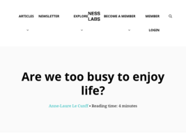 |
https://nesslabs.com/too-busy-to-enjoy-life |
| 598 |
 |
https://neverworkintheory.org/ |
| 599 |
 |
https://new.pythonforengineers.com/blog/3-things-every-programmer-must-learn/ |
| 600 |
 |
https://new.pythonforengineers.com/blog/no-one-cares-about-you/ |
| 601 |
 |
https://newatlas.com/computers/digital-hoarding-four-types-collectors-psychology/ |
| 602 |
 |
https://news.harvard.edu/gazette/story/2019/09/study-shows-that-students-learn-more-when-taking-part-in-classrooms-that-employ-active-learning-strategies/ |
| 603 |
 |
https://nextapps-de.github.io/winbox/ |
| 604 |
 |
https://nnmclub.to/forum/viewtopic.php?t=1235780 |
| 605 |
 |
https://notes.andymatuschak.org/About_these_notes |
| 606 |
 |
https://notes.andymatuschak.org/Collecting_material_feels_more_useful_than_it_usually_is |
| 607 |
 |
https://notes.andymatuschak.org/z21cgR9K3UcQ5a7yPsj2RUim3oM2TzdBByZu |
| 608 |
 |
https://notes.andymatuschak.org/z4KZ9973AoHhvM9Pj5Qrds48JXNbMEwVJmVRw |
| 609 |
 |
https://notes.andymatuschak.org/z4KZ9973AoHhvM9Pj5Qrds48JXNbMEwVJmVRw?stackedNotes=z6bci25mVUBNFdVWSrQNKr6u7AZ1jFzfTVbMF&stackedNotes=z3XP5GRmd9z1D2qCE7pxUvbeSVeQuMiqz9x1C&stackedNotes=z8T6sLNco2benUMgcXUXeJh35eW2obP48DoPp |
| 610 |
 |
https://notes.andymatuschak.org/z4SDCZQeRo4xFEQ8H4qrSqd68ucpgE6LU155C |
| 611 |
 |
https://notes.andymatuschak.org/z4SDCZQeRo4xFEQ8H4qrSqd68ucpgE6LU155C?stackedNotes=z3PBVkZ2SvsAgFXkjHsycBeyS6Cw1QXf7kcD8 |
| 612 |
 |
https://noti.st/mxb/lhMFMv/rage-against-the-content-machine#suMUkQM |
| 613 |
 |
https://nplusonemag.com/issue-39/reviews/my-octopus-girlfriend/ |
| 614 |
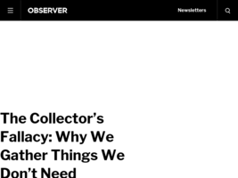 |
https://observer.com/2017/05/the-collectors-fallacy-why-we-gather-things-we-dont-need/ |
| 615 |
 |
https://offdrive.com/blog/2021/06/data-hoarding-dangers-what-is-data-hoarding-and-how-can-you-avoid-it/ |
| 616 |
 |
https://ohhelloana.blog/blogging-and-me/ |
| 617 |
 |
https://old.reddit.com//r/zen/comments/4ufniz/goalless_practice/ |
| 618 |
 |
https://old.reddit.com/r/Zettelkasten/comments/i0zrpc/zettelkasten_and_the_artistic_process/ |
| 619 |
 |
https://old.reddit.com/r/Zettelkasten/comments/o1x7tb/use_zettelkasten_as_a_software_engineer/ |
| 620 |
 |
https://old.reddit.com/r/Zettelkasten/comments/o4vts2/book_recommendations_about_the_zettelkasten_system/ |
| 621 |
 |
https://old.reddit.com/r/Zettelkasten/comments/o7q03z/so_you_want_to_retain_what_you_read_and_take_your/ |
| 622 |
 |
https://old.reddit.com/r/Zettelkasten/comments/oaqhdh/ended_up_in_a_bit_of_a_mess_during_integration/ |
| 623 |
 |
https://old.reddit.com/r/Zettelkasten/comments/ob6htk/tip_using_your_own_words/ |
| 624 |
 |
https://old.reddit.com/r/Zettelkasten/comments/prr93s/would_this_help/ |
| 625 |
 |
https://old.reddit.com/r/Zettelkasten/comments/q6frj7/terminology_vs_concept_vs_workflow_in/ |
| 626 |
 |
https://old.reddit.com/r/Zettelkasten/comments/qdknqo/does_zettelkasten_work_for_technical_people_like/ |
| 627 |
 |
https://old.reddit.com/r/Zettelkasten/comments/qe7pb3/advice_on_processing_your_own_original_notes/ |
| 628 |
 |
https://old.reddit.com/r/Zettelkasten/comments/qe8e7g/how_to_create_an_index_in_the_zk/ |
| 629 |
 |
https://old.reddit.com/r/Zettelkasten/comments/qexb87/who_here_lets_their_zettelkasten_determine_what/ |
| 630 |
 |
https://old.reddit.com/r/Zettelkasten/comments/qi3ak0/how_do_you_convert_notes_that_you_take_during_a/ |
| 631 |
 |
https://old.reddit.com/r/Zettelkasten/comments/qi6cfc/zettelkasten_and_personal_wiki_for_personal_notes/ |
| 632 |
 |
https://old.reddit.com/r/Zettelkasten/comments/rcsquk/workflow_help_how_do_you_include_articles_in_your/ |
| 633 |
 |
https://old.reddit.com/r/Zettelkasten/comments/rkfofd/does_zettelkasten_lead_to_superficial_reading/ |
| 634 |
 |
https://old.reddit.com/r/Zettelkasten/comments/s2mv0n/the_best_book_on_notetaking/ |
| 635 |
|
https://old.reddit.com/r/Zettelkasten/comments/w5yz0n/zettelkasten_is_not_a_notetaking_system/ |
| 636 |
 |
https://old.reddit.com/r/banjo/comments/eo7fq7/increase_your_musical_reaction_time_spontaneous/ |
| 637 |
 |
https://old.reddit.com/r/dosgaming/comments/mlamqp/heretic_a_game_i_love_even_more_than_doom/ |
| 638 |
 |
https://old.reddit.com/r/dosgaming/comments/ngvmbi/your_favourite_dos_games/ |
| 639 |
 |
https://old.reddit.com/r/mandolin/comments/eggg1g/how_do_you_practice_trying_to_figure_out_what_to/ |
| 640 |
 |
https://old.reddit.com/r/programming/comments/k8lg4r/code_diary_how_and_why_to_keep_one/ |
| 641 |
 |
https://old.reddit.com/r/programming/comments/ljmmo7/solid_principles_around_you_2017/ |
| 642 |
 |
https://old.reddit.com/r/programming/comments/mbb5zx/the_ultimate_guide_to_writing_selfdocumenting_code/ |
| 643 |
 |
https://old.reddit.com/r/programming/comments/mcbhgj/the_dispassionate_developer/ |
| 644 |
 |
https://old.reddit.com/r/programming/comments/mci23n/get_better_at_programming_by_learning_how_things/ |
| 645 |
 |
https://old.reddit.com/r/programming/comments/mcx610/sebastian_lague_coding_adventure_ant_and_slime/ |
| 646 |
 |
https://old.reddit.com/r/programming/comments/me9u0b/employees_are_happier_when_led_by_people_with/ |
| 647 |
 |
https://old.reddit.com/r/programming/comments/mgmmzu/developer_tools_can_be_magic_instead_they_collect/ |
| 648 |
 |
https://old.reddit.com/r/programming/comments/mgpu6c/font_size_is_useless_lets_fix_it/ |
| 649 |
 |
https://old.reddit.com/r/programming/comments/mjokvy/the_beauty_of_programming/ |
| 650 |
 |
https://old.reddit.com/r/programming/comments/mlcyoi/programming_is_hard/ |
| 651 |
 |
https://old.reddit.com/r/programming/comments/mm12pt/the_project_that_made_me_burnout/ |
| 652 |
 |
https://old.reddit.com/r/programming/comments/mm2sum/what_have_we_lost/ |
| 653 |
 |
https://old.reddit.com/r/programming/comments/motdxs/use_consolelog_like_a_pro/ |
| 654 |
 |
https://old.reddit.com/r/programming/comments/mpzpqj/a_vim_guide_for_adept_users/ |
| 655 |
 |
https://old.reddit.com/r/programming/comments/mpzr9h/one_letter_programming_languages/ |
| 656 |
 |
https://old.reddit.com/r/programming/comments/mq8daz/why_some_developers_are_avoiding_app_store/ |
| 657 |
 |
https://old.reddit.com/r/programming/comments/mt9lmv/i_played_rick_astley_never_give_you_up_in_console/ |
| 658 |
 |
https://old.reddit.com/r/programming/comments/nm9ehx/sql_query_optimization_understanding_key_principle/ |
| 659 |
 |
https://old.reddit.com/r/programming/comments/nougk1/what_every_programmer_should_know_about_memory/ |
| 660 |
 |
https://old.reddit.com/r/programming/comments/npv163/should_perl_die_gracefully/ |
| 661 |
 |
https://old.reddit.com/r/programming/comments/nq7l8v/logging_is_important/ |
| 662 |
 |
https://old.reddit.com/r/programming/comments/nsu53n/organize_code_by_concepts_not_layers/ |
| 663 |
 |
https://old.reddit.com/r/programming/comments/nt9jmt/computer_chips_are_so_advanced_they_are_more/ |
| 664 |
 |
https://old.reddit.com/r/programming/comments/nucdqn/check_for_standards_before_creating_a_new_one/ |
| 665 |
 |
https://old.reddit.com/r/programming/comments/nucxjr/adventures_in_contacting_the_russian_fsb/ |
| 666 |
 |
https://old.reddit.com/r/programming/comments/nulyx0/how_replit_used_legal_threats_to_kill_my/ |
| 667 |
 |
https://old.reddit.com/r/programming/comments/o3cap6/state_of_the_windows_how_many_layers_of_ui/ |
| 668 |
 |
https://old.reddit.com/r/programming/comments/o4fs5o/software_estimation_is_hard_do_it_anyway/ |
| 669 |
 |
https://old.reddit.com/r/programming/comments/oevuja/write_code_that_is_easy_to_delete_not_easy_to/ |
| 670 |
 |
https://old.reddit.com/r/programming/comments/oioh4q/best_of_bashrc/ |
| 671 |
 |
https://old.reddit.com/r/programming/comments/ojhd0n/83_of_developers_suffer_from_burnout_haystack/ |
| 672 |
 |
https://old.reddit.com/r/programming/comments/okudz9/dont_solve_problems_eliminate_them_how/ |
| 673 |
 |
https://old.reddit.com/r/programming/comments/onz3n1/thinking_about_glue_code/ |
| 674 |
 |
https://old.reddit.com/r/programming/comments/oow95t/my_code_is_selfdocumenting/ |
| 675 |
 |
https://old.reddit.com/r/programming/comments/ovx5zc/softwareheavy_personal_blog_list/ |
| 676 |
 |
https://old.reddit.com/r/programming/comments/ow3dkm/overengineering_the_root_of_all_evil/ |
| 677 |
 |
https://old.reddit.com/r/programming/comments/ow81tl/chronofold_a_data_structure_for_versioned_text/ |
| 678 |
 |
https://old.reddit.com/r/programming/comments/pdjnfr/software_development_topics_ive_changed_my_mind/ |
| 679 |
 |
https://old.reddit.com/r/programming/comments/pdr5ch/how_to_review_code_well/ |
| 680 |
 |
https://old.reddit.com/r/programming/comments/pdtiq2/breaking_the_software_licensing_of_early2000s/ |
| 681 |
 |
https://old.reddit.com/r/programming/comments/q0p795/burnout_in_software_development_and_developer/ |
| 682 |
 |
https://old.reddit.com/r/programming/comments/q3w0r9/20_things_ive_learned_in_my_20_years_as_a/ |
| 683 |
 |
https://old.reddit.com/r/programming/comments/q9j0ux/how_to_criticize_code/ |
| 684 |
 |
https://old.reddit.com/r/programming/comments/qfm5kh/25_lessons_from_25_years_of_coding/ |
| 685 |
 |
https://old.reddit.com/r/programming/comments/qkcord/complexity_is_killing_software_developers/ |
| 686 |
 |
https://old.reddit.com/r/programming/comments/qpe27c/please_ask_stupid_questions_as_a_new_software/ |
| 687 |
 |
https://old.reddit.com/r/programming/comments/qpjifl/a_terrible_schema_from_a_clueless_programmer/ |
| 688 |
 |
https://old.reddit.com/r/programming/comments/qpkx8n/this_project_will_only_take_2_hours/ |
| 689 |
 |
https://old.reddit.com/r/programming/comments/qpz8jz/you_should_use_forums_rather_than_slackdiscord_to/ |
| 690 |
 |
https://old.reddit.com/r/programming/comments/qq68p4/stop_requiring_specific_technology_experience_for/ |
| 691 |
 |
https://old.reddit.com/r/programming/comments/qqulw5/the_invisible_javascript_backdoor/ |
| 692 |
 |
https://old.reddit.com/r/programming/comments/qr4xbe/why_requirements_are_more_important_than_code/ |
| 693 |
 |
https://old.reddit.com/r/programming/comments/qu2y5m/writing_great_software_isnt_all_about_the/ |
| 694 |
 |
https://old.reddit.com/r/programming/comments/qu5w2e/heres_how_2_lines_of_apl_code_checked_fixed_1h_of/ |
| 695 |
 |
https://old.reddit.com/r/programming/comments/qw9jn0/2_cents_on_mental_health_for_programmers/ |
| 696 |
 |
https://old.reddit.com/r/programming/comments/qw9mtt/why_the_churchturing_equivalence_matters_to_the/ |
| 697 |
 |
https://old.reddit.com/r/programming/comments/qwjcmp/tasking_developers_with_creating_detailed/ |
| 698 |
 |
https://old.reddit.com/r/programming/comments/qx6usf/write_code_topdown/ |
| 699 |
 |
https://old.reddit.com/r/programming/comments/qzmy67/things_i_wish_lang_had/ |
| 700 |
 |
https://old.reddit.com/r/programming/comments/r11zjr/overengineering_can_kill_your_product/ |
| 701 |
 |
https://old.reddit.com/r/programming/comments/rbewov/ive_recently_written_an_article_about_defensive/ |
| 702 |
 |
https://old.reddit.com/r/programming/comments/rrgux4/dataoriented_programming_book_first_draft/ |
| 703 |
 |
https://old.reddit.com/r/programming/comments/rwq5l9/found_a_free_game_on_steam_that_some_of_you_might/ |
| 704 |
 |
https://old.reddit.com/r/programming/comments/rzvqgf/an_incomplete_list_of_skills_senior_engineers/ |
| 705 |
 |
https://old.reddit.com/r/programming/comments/s1v0vf/make_the_semantic_web_web_30_again_with_the_help/ |
| 706 |
 |
https://old.reddit.com/r/programming/comments/s2kcp7/whats_in_a_good_error_message/ |
| 707 |
 |
https://old.reddit.com/r/programming/comments/s31c6t/dear_sir_you_have_built_a_compiler/ |
| 708 |
 |
https://old.reddit.com/r/programming/comments/s36f8r/even_if_a_function_doesnt_do_anything_you_still/ |
| 709 |
 |
https://old.reddit.com/r/programming/comments/s3cpyd/what_do_we_know_about_time_pressure_in_software/ |
| 710 |
 |
https://old.reddit.com/r/programming/comments/s4i22a/youtubedls_website_host_is_being_sued/ |
| 711 |
 |
https://old.reddit.com/r/programming/comments/s68aaz/your_app_is_not_compliant_with_google_play/ |
| 712 |
 |
https://old.reddit.com/r/programming/comments/s6tuei/make_debugging_suck_less_keep_a_logbook/ |
| 713 |
 |
https://old.reddit.com/r/programming/comments/sgdqd4/worse_is_better/ |
| 714 |
 |
https://old.reddit.com/r/programming/comments/sgszxg/comparing_popular_monospace_fonts_consolas_roboto/ |
| 715 |
 |
https://old.reddit.com/r/programming/comments/sh1acr/10_bash_quirks_and_how_to_live_with_them/ |
| 716 |
 |
https://old.reddit.com/r/programming/comments/sh4835/a_ux_designer_walks_into_a_tesla_bar/ |
| 717 |
 |
https://old.reddit.com/r/programming/comments/shpy1w/pay_attention_to_webassembly/ |
| 718 |
 |
https://old.reddit.com/r/programming/comments/smqw81/how_to_structure_data_science_project/ |
| 719 |
 |
https://old.reddit.com/r/programming/comments/smyrd7/keep_calm_and_solid/hvzzuc9/ |
| 720 |
|
https://old.reddit.com/r/programming/comments/w7ptyg/your_code_doesnt_have_to_be_a_mess/ |
| 721 |
|
https://old.reddit.com/r/programming/comments/w7w8a0/advanced_sql_going_beyond_the_basics/ |
| 722 |
|
https://old.reddit.com/r/programming/comments/w82f12/why_you_should_favor_composition_over_inheritance/ |
| 723 |
|
https://old.reddit.com/r/programming/comments/w8j968/ive_always_felt_that_spreadsheet_sheets_can_act/ |
| 724 |
 |
https://old.reddit.com/r/retrogaming/comments/nrd6hx/what_is_your_favorite_game_on_this_wonderful/ |
| 725 |
 |
https://old.reddit.com/r/taoism/comments/gnql0s/stumbled_upon_this_great_lecture_talking_about/ |
| 726 |
 |
https://old.reddit.com/user/ElrioVanPutten |
| 727 |
 |
https://old.reddit.com/user/New-Investigator-623 |
| 728 |
 |
https://onemanbandbook.blogspot.com/ |
| 729 |
 |
https://onlineradiobox.com/be/?cs=be.instrumentalsfor&played=1&lang=en |
| 730 |
 |
https://onlineradiobox.com/search?cs=fi.auranaallot&played=1&q=finland&s=All%20styles |
| 731 |
 |
https://onlineradiobox.com/search?cs=fi.basso&played=1&q=finland&s=All%20styles |
| 732 |
 |
https://onlineradiobox.com/search?cs=fi.basso&q=finland&s=All%20styles |
| 733 |
 |
https://opensource.com/article/19/11/how-sort-awk |
| 734 |
 |
https://opensource.com/article/21/6/edlin-freedos |
| 735 |
 |
https://opensource.guide/ |
| 736 |
 |
https://ovid.github.io/articles/avoid-common-software-project-mistakes.html |
| 737 |
 |
https://ovid.github.io/articles/fixing-mvc-in-web-applications.html |
| 738 |
 |
https://pastebin.com/9paenBfQ |
| 739 |
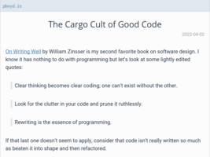 |
https://pboyd.io/posts/cargo-cult-of-good-code/ |
| 740 |
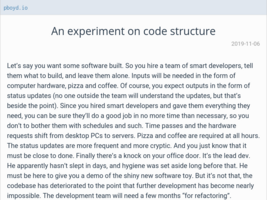 |
https://pboyd.io/posts/code-structure-experiment/ |
| 741 |
 |
https://petermolnar.net/journal/influental-articles-the-old-web/index.html |
| 742 |
 |
https://phoenixtrap.com/2021/03/27/perl-and-xml-in-2021-a-few-lessons-learned/?utm_source=rss&utm_medium=rss&utm_campaign=perl-and-xml-in-2021-a-few-lessons-learned |
| 743 |
 |
https://phoenixtrap.com/2021/07/20/the-four-noisy-horsemen-of-perl-hate/ |
| 744 |
|
https://phoenixtrap.com/2021/08/17/perl-raku-best-frenemies/ |
| 745 |
 |
https://pitchgarden.com/ear-trainer |
| 746 |
 |
https://playkids.ch/process/2013 |
| 747 |
 |
https://possumcreek.medium.com/a-dozen-fragments-on-playground-theory-684104bcb4ab |
| 748 |
 |
https://postnauka.ru/video/156613 |
| 749 |
 |
https://potocpav.github.io/programming/2020/05/19/arithmetics-without-plus.html |
| 750 |
 |
https://practicaltypography.com/ |
| 751 |
 |
https://pragmaticreview.com/ |
| 752 |
 |
https://pragmaticreview.com/the-idea-behind-functional-programming/ |
| 753 |
 |
https://pragtob.wordpress.com/2016/12/06/mastery-comes-from-failure/ |
| 754 |
 |
https://preslav.me/2020/03/01/use-the-git-history/ |
| 755 |
 |
https://principal-it.eu/2021/03/tdd-tales-overused-test-doubles/ |
| 756 |
 |
https://processing.org/ |
| 757 |
 |
https://processingfoundation.org/projects |
| 758 |
 |
https://prog21.dadgum.com/193.html |
| 759 |
 |
https://prog21.dadgum.com/221.html |
| 760 |
 |
https://programming.guide/worlds-most-copied-so-snippet.html |
| 761 |
 |
https://programmingdesignsystems.com/color/a-short-history-of-color-theory/ |
| 762 |
 |
https://project-awesome.org/ |
| 763 |
 |
https://psyche.co/guides/from-hedonism-to-humanism-philosophys-defence-of-pleasure |
| 764 |
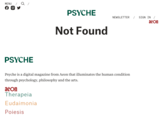 |
https://psyche.co/ideas/dont-be-stoic-roman-stoicisms-origins-show-its-perniciousness |
| 765 |
|
https://psyche.co/ideas/sisyphus-skateboarders-and-the-value-in-endless-failure |
| 766 |
|
https://psyche.co/ideas/we-are-all-caught-in-a-pessimism-trap-but-there-is-a-way-out |
| 767 |
 |
https://psychologyjournal.ru/public/paradoksalnaya-teoriya-izmeneniy-kak-eto-rabotaet/ |
| 768 |
 |
https://psychosearch.ru/practice/prakticheskaya-psikhologiya/566-12-effects-of-keeping-a-diary |
| 769 |
|
https://psytests.org/result?v=lus1MVVMKiWV0psKSTVMp |
| 770 |
|
https://ptol.github.io/hexyzland/ |
| 771 |
 |
https://puroh.it/learning-german-a1-to-c2/ |
| 772 |
 |
https://puroh.it/reading-for-a-fine-vocabulary/ |
| 773 |
 |
https://puroh.it/why-youre-not-creating/ |
| 774 |
 |
https://pycodelic.blogspot.com/ |
| 775 |
 |
https://quantifiedself.com/blog/spaced-repetition-and-learning/ |
| 776 |
 |
https://questions.wizardzines.com/cors.html |
| 777 |
 |
https://queue.acm.org/detail.cfm?id=1053354 |
| 778 |
 |
https://queue.acm.org/detail.cfm?id=3468263 |
| 779 |
 |
https://rabkor.ru/columns/analysis/2022/08/10/what_is_social_molecularization/ |
| 780 |
 |
https://rachelbythebay.com/w/2021/11/06/sql/ |
| 781 |
 |
https://radreads.co/gtd-cal-newport/ |
| 782 |
 |
https://raku-advent.blog/2021/12/06/unix_philosophy_without_leftpad/ |
| 783 |
 |
https://randomascii.wordpress.com/2022/01/12/5-5-mm-in-1-25-nanoseconds/ |
| 784 |
 |
https://raumet.com/framework |
| 785 |
 |
https://raumet.com/marketing |
| 786 |
|
https://reallifemag.com/emotional-rescue/ |
| 787 |
|
https://reallifemag.com/rank-and-file/ |
| 788 |
 |
https://refold.la/simplified/ |
| 789 |
 |
https://remix.run/ |
| 790 |
 |
https://returnofthemac.tech/6-tips-to-improve-your-code-reviews |
| 791 |
 |
https://rmozone.com/snapshots/2021/11/gentle-history/ |
| 792 |
 |
https://rs.io/anki-tips/ |
| 793 |
|
https://rs.io/anki-tips/ |
| 794 |
 |
https://rs.io/core-human-values/ |
| 795 |
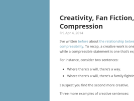 |
https://rs.io/creativity-fan-fiction-compression/ |
| 796 |
 |
https://rs.io/developing-good-research-skills-compressing-knowledge/ |
| 797 |
|
https://rs.io/developing-good-research-skills-compressing-knowledge/ |
| 798 |
 |
https://rs.io/effective-study-skills-for-college-students-why-questions/ |
| 799 |
 |
https://rs.io/software-writers-tools-improve-writing/ |
| 800 |
|
https://rs.io/software-writers-tools-improve-writing/ |
| 801 |
 |
https://rs.io/ultimate-guide-simulated-annealing/ |
| 802 |
|
https://rs.io/why-i-like-surprises/ |
| 803 |
 |
https://ru.wikibooks.org/wiki/%D0%9C%D0%B0%D1%82%D0%B5%D0%BC%D0%B0%D1%82%D0%B8%D0%BA%D0%B0_%D1%81%D0%BB%D1%83%D1%87%D0%B0%D1%8F |
| 804 |
 |
https://ru.wikichi.ru/wiki/Shenhui |
| 805 |
 |
https://ru.wikipedia.org/wiki/%D0%90%D0%BD%D0%B0%D0%BB%D0%B8%D0%B7_%D1%87%D1%83%D0%B2%D1%81%D1%82%D0%B2%D0%B8%D1%82%D0%B5%D0%BB%D1%8C%D0%BD%D0%BE%D1%81%D1%82%D0%B8 |
| 806 |
 |
https://ru.wikipedia.org/wiki/%D0%9A%D0%BB%D0%B5%D0%B9%D0%BD,_%D0%96%D0%B5%D1%80%D0%B0%D1%80 |
| 807 |
 |
https://ru.wikipedia.org/wiki/%D0%9A%D1%80%D1%83%D0%BB%D0%BB |
| 808 |
 |
https://ru.wikipedia.org/wiki/%D0%9F%D0%BE%D0%B2%D0%B5%D1%82%D0%BA%D0%B8%D0%BD,%D0%92%D0%BB%D0%B0%D0%B4%D0%B8%D0%BC%D0%B8%D1%80%D0%98%D0%B2%D0%B0%D0%BD%D0%BE%D0%B2%D0%B8%D1%87_(%D0%BC%D1%83%D0%B7%D1%8B%D0%BA%D0%BE%D0%B2%D0%B5%D0%B4) |
| 809 |
 |
https://ru.wikipedia.org/wiki/%D0%9F%D0%BE%D0%BB%D0%BE%D0%B6%D0%B8%D0%B9,%D0%91%D0%BE%D1%80%D0%B8%D1%81%D0%A1%D0%B5%D1%80%D0%B3%D0%B5%D0%B5%D0%B2%D0%B8%D1%87 |
| 810 |
 |
https://ru.wikipedia.org/wiki/%D0%9F%D1%80%D0%B8%D0%BD%D1%86%D0%B8%D0%BF_%D0%9B%D0%B5_%D0%A8%D0%B0%D1%82%D0%B5%D0%BB%D1%8C%D0%B5_%E2%80%94_%D0%91%D1%80%D0%B0%D1%83%D0%BD%D0%B0 |
| 811 |
 |
https://ru.wikipedia.org/wiki/%D0%9F%D1%80%D0%B8%D1%81%D1%82%D0%BB%D0%B8,%D0%94%D0%B6%D0%BE%D0%BD%D0%91%D0%BE%D0%B9%D0%BD%D1%82%D0%BE%D0%BD |
| 812 |
 |
https://ru.wikipedia.org/wiki/%D0%A1%D0%B0%D0%BC%D0%BE%D0%BE%D1%80%D0%B3%D0%B0%D0%BD%D0%B8%D0%B7%D0%BE%D0%B2%D0%B0%D0%BD%D0%BD%D0%B0%D1%8F_%D0%BA%D1%80%D0%B8%D1%82%D0%B8%D1%87%D0%BD%D0%BE%D1%81%D1%82%D1%8C |
| 813 |
 |
https://ru.wikipedia.org/wiki/%D0%A1%D0%B0%D0%BC%D0%BE%D0%BE%D1%80%D0%B3%D0%B0%D0%BD%D0%B8%D0%B7%D1%83%D1%8E%D1%89%D0%B0%D1%8F%D1%81%D1%8F_%D0%BA%D0%B0%D1%80%D1%82%D0%B0_%D0%9A%D0%BE%D1%85%D0%BE%D0%BD%D0%B5%D0%BD%D0%B0 |
| 814 |
 |
https://ru.wikipedia.org/wiki/101_(%D0%B8%D0%B3%D1%80%D0%B0) |
| 815 |
 |
https://ru.wikipedia.org/wiki/31_%D0%B8%D1%8E%D0%BD%D1%8F_(%D1%84%D0%B8%D0%BB%D1%8C%D0%BC) |
| 816 |
 |
https://runningcrocodile.fi/articles/programming-as-learning-tool.html |
| 817 |
 |
https://sarabander.github.io/sicp/ |
| 818 |
 |
https://schroer.ca/2019/11/02/abstraction/ |
| 819 |
 |
https://schroer.ca/2022/04/10/the-joy-of-small-projects/ |
| 820 |
 |
https://scpfoundation.net/antimemetics-division-hub |
| 821 |
 |
https://sebastiankuebeck.wordpress.com/2017/09/17/solid-principles-and-the-arts-of-finding-the-beach/ |
| 822 |
 |
https://secluded.site/vim-as-a-markdown-editor/ |
| 823 |
 |
https://selectfrom.dev/spectrograms-or-how-i-learned-to-stop-worrying-and-love-audio-signal-processing-for-machine-d28c022ca5ca |
| 824 |
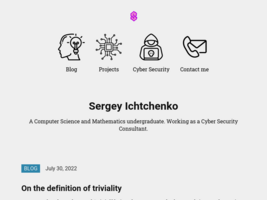 |
https://sergey.fi/ |
| 825 |
 |
https://serverfault.com/questions/867814/how-do-i-configure-utf-8-content-type-header-in-apache |
| 826 |
 |
https://shahriyarshahrabi.medium.com/gentle-introduction-to-fluid-simulation-for-programmers-and-technical-artists-7c0045c40bac |
| 827 |
 |
https://shantanoo-desai.github.io/ |
| 828 |
 |
https://shantanoo-desai.github.io/posts/technology/documenting_queries/ |
| 829 |
 |
https://shihn.ca/posts/2020/roughjs-algorithms/ |
| 830 |
 |
https://shirttailstompers.bandcamp.com/album/milenburg-joys |
| 831 |
 |
https://sighack.com/ |
| 832 |
 |
https://sircmpwn.github.io/2018/02/24/The-road-to-sustainable-FOSS.html |
| 833 |
 |
https://sites.google.com/site/steveyegge2/you-should-write-blogs |
| 834 |
 |
https://sites.google.com/site/zurnalysssr/home |
| 835 |
 |
https://sive.rs/plaintext |
| 836 |
 |
https://sive.rs/srs |
| 837 |
 |
https://sixtyfps.io/blog/showing-guis-from-shell-scripts.html |
| 838 |
 |
https://skamille.medium.com/an-incomplete-list-of-skills-senior-engineers-need-beyond-coding-8ed4a521b29f |
| 839 |
 |
https://soltem.livejournal.com/ |
| 840 |
 |
https://soltem.livejournal.com/39433.html |
| 841 |
 |
https://soltem.livejournal.com/43790.html |
| 842 |
 |
https://soltem.livejournal.com/63041.html |
| 843 |
 |
https://soltem.livejournal.com/65098.html |
| 844 |
 |
https://solutionspace.blog/2021/12/04/every-simple-language-will-eventually-end-up-turing-complete/ |
| 845 |
 |
https://sookocheff.com/post/language/bulk-generating-cloze-deletions-for-learning-a-language-with-anki/ |
| 846 |
 |
https://sookocheff.com/post/language/cloze-deletions/ |
| 847 |
 |
https://speakerdeck.com/tastapod |
| 848 |
 |
https://speakerdeck.com/tylersticka/side-projects-that-ship-refresh-portland-2014 |
| 849 |
 |
https://spectrum.ieee.org/artificial-intelligence/machine-learning/the-algorithms-that-make-instacart-roll |
| 850 |
 |
https://spectrum.ieee.org/rodney-brooks-ai |
| 851 |
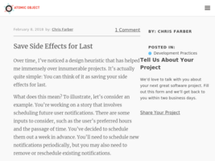 |
https://spin.atomicobject.com/2018/02/08/defer-side-effects/ |
| 852 |
 |
https://sport-51.ru/article/useful-information/11404-izometricheskie-uprazhnenija-aleksandra-zassa.html |
| 853 |
 |
https://sqitch.org/docs/manual/sqitchtutorial/ |
| 854 |
 |
https://sqlbolt.com/ |
| 855 |
 |
https://sspaeti.com/blog/pkm-workflow-for-a-deeper-life/ |
| 856 |
 |
https://stackoverflow.com/questions/2142566/storing-matrices-in-a-relational-database |
| 857 |
 |
https://stackoverflow.com/questions/2866358/git-checkout-only-files-without-repository |
| 858 |
 |
https://stackoverflow.com/questions/546655/finding-all-cycles-in-a-directed-graph |
| 859 |
 |
https://stackoverflow.com/questions/7652170/initcomponent-vs-constructor-when-defining-an-object |
| 860 |
 |
https://stackoverflow.com/questions/913869/how-to-change-the-default-encoding-to-utf-8-for-apache |
| 861 |
 |
https://standardrepertoire.com/fly-me-to-the-moon.html |
| 862 |
 |
https://starship.rs/ |
| 863 |
 |
https://stitcher.io/blog/the-ikea-effect |
| 864 |
 |
https://store.steampowered.com/app/1812820/Bitburner/ |
| 865 |
 |
https://studyhall.xyz/who-really-broke-the-discourse/ |
| 866 |
 |
https://suricrasia.online/iceberg/ |
| 867 |
 |
https://suricrasia.online/library/ |
| 868 |
 |
https://swingshouters.bandcamp.com/album/one-more |
| 869 |
 |
https://swizec.com/blog/a-holiday-compsci-reading-list-for-you/ |
| 870 |
 |
https://sylviavanos.nl/blog/2021/12/24/google_play_hell.html |
| 871 |
 |
https://t.co/2DYT4EPjIx" |
| 872 |
 |
https://t.co/iZia58BLZG" |
| 873 |
 |
https://tabs.ultimate-guitar.com/tab/misc-traditional/mobile-line-chords-3134948 |
| 874 |
 |
https://tabs.ultimate-guitar.com/tab/ry-cooder/comin-in-on-a-wing-and-a-prayer-chords-3229310 |
| 875 |
 |
https://tailwindcss.com/ |
| 876 |
 |
https://taper.badquar.to/7/about.html#buckenham |
| 877 |
 |
https://taper.badquar.to/7/display_case.html?s=09 |
| 878 |
 |
https://techblog.smc.it/en/2020-06-10/typescript-use-cases |
| 879 |
 |
https://tetzoo.com/blog/2018/12/11/up-close-and-personal-crystal-palace-dinosaurs |
| 880 |
|
https://tetzoo.com/blog/2019/4/22/usbornes-all-about-monsters |
| 881 |
 |
https://textslashplain.com/2021/06/02/leaky-abstractions/ |
| 882 |
 |
https://thecreativeindependent.com/people/jenny-odell-how-to-grow-an-idea/ |
| 883 |
 |
https://thehomeofhappyfeet.com/swing-djing/ |
| 884 |
 |
https://theoryandpractice.ru/posts/18622-metod-prob-i-oshibok-kak-poluchat-znaniya-iz-opyta |
| 885 |
 |
https://theproductiveengineer.net/how-to-use-zettelkasten-as-a-programmer-or-developer/ |
| 886 |
|
https://thesession.org/discussions/37717 |
| 887 |
 |
https://thetechnicalgeekery.com/2014/11/the-records-project-a-study-of-paper-vs-computers/ |
| 888 |
 |
https://thevaluable.dev/burnout-software-developer/ |
| 889 |
 |
https://thevaluable.dev/cohesion-coupling-guide-examples/ |
| 890 |
 |
https://thevaluable.dev/vim-adept/ |
| 891 |
 |
https://thevaluable.dev/vim-for-beginners/ |
| 892 |
 |
https://thevaluable.dev/vim-intermediate/ |
| 893 |
 |
https://thevaluable.dev/vim-veteran/ |
| 894 |
 |
https://this.deakin.edu.au/study/mastering-the-art-of-effective-note-taking |
| 895 |
 |
https://thisartworkdoesnotexist.com/ |
| 896 |
 |
https://tincuprattlers.bandcamp.com/album/if-my-luck-dont-change |
| 897 |
 |
https://tinytools.directory/ |
| 898 |
 |
https://tonsky.me/blog/emoji/ |
| 899 |
 |
https://tonsky.me/blog/font-size/ |
| 900 |
 |
https://towardsdatascience.com |
| 901 |
 |
https://towardsdatascience.com/unintended-consequences-and-goodharts-law-68d60a94705c |
| 902 |
 |
https://tracery.io/ |
| 903 |
 |
https://trekhleb.dev/blog/2018/dynamic-programming-vs-divide-and-conquer/ |
| 904 |
 |
https://twitter.com/BlueAquilae |
| 905 |
 |
https://twitter.com/DesignReviewed |
| 906 |
 |
https://twitter.com/K_u___R_o |
| 907 |
 |
https://twitter.com/SmoothUnicode/status/1380897160732975107 |
| 908 |
 |
https://twitter.com/_leveling_up/status/1465697824843042818 |
| 909 |
 |
https://twitter.com/altsoph |
| 910 |
 |
https://twitter.com/b0rk |
| 911 |
 |
https://twitter.com/burstofbeaden |
| 912 |
 |
https://twitter.com/bylinina |
| 913 |
 |
https://twitter.com/ceschiii |
| 914 |
 |
https://twitter.com/dadgumjames |
| 915 |
 |
https://twitter.com/danluu |
| 916 |
 |
https://twitter.com/golan |
| 917 |
 |
https://twitter.com/golan/status/1447980505236914179 |
| 918 |
 |
https://twitter.com/inconvergent |
| 919 |
 |
https://twitter.com/katecrawford |
| 920 |
 |
https://twitter.com/kgolid |
| 921 |
 |
https://twitter.com/m_nproxy/status/996735248065904641 |
| 922 |
 |
https://twitter.com/panarin_misha |
| 923 |
 |
https://twitter.com/rich_lem/status/1447930688150310913 |
| 924 |
 |
https://twitter.com/seldo/status/1453094314439942149?utm_medium=email&utm_source=topic+optin&utm_campaign=awareness&utm_content=20211204+prog+nl&mkt_tok=MTA3LUZNUy0wNzAAAAGBIzdtfTUZ8MDmdkQFkXR-Jjta389gtQ2J-_jt8SY9KbRPiKNZq-uhhvof0fAE8nDiCsoBeKRlOkusC58IP4B6gh3wopICCneh1C0xR-q39h7QaA |
| 925 |
 |
https://twitter.com/staffelf |
| 926 |
 |
https://twitter.com/torpordust |
| 927 |
 |
https://twitter.com/v21 |
| 928 |
 |
https://twitter.com/v21/status/1481195279487574017/photo/1 |
| 929 |
 |
https://twobithistory.org/ |
| 930 |
 |
https://twobithistory.org/2018/05/27/semantic-web.html |
| 931 |
 |
https://twobithistory.org/2020/01/05/foaf.html |
| 932 |
|
https://twtxt.net/ |
| 933 |
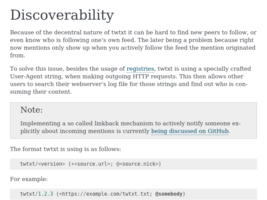 |
https://twtxt.readthedocs.io/en/latest/user/discoverability.html |
| 934 |
 |
https://un.curl.dev/ |
| 935 |
 |
https://understandlegacycode.com/blog/earn-maintainers-esteem-with-adrs/ |
| 936 |
 |
https://upstateenglish.org/102/tsis-intro.html |
| 937 |
 |
https://usborne.com/browse-books/features/computer-and-coding-books/ |
| 938 |
 |
https://v21.io/blog/ |
| 939 |
 |
https://vc.ru/life/73498-pyat-pravil-samopoznaniya-kak-vesti-dnevnik-s-polzoy |
| 940 |
 |
https://vimeo.com/106288950 |
| 941 |
 |
https://vincentsavoie.blogspot.com/2017/02/deep-work-vs-messy-how-to-balance.html |
| 942 |
 |
https://vk.com/2d_here |
| 943 |
 |
[https://vk.com/@rufeldenkrais-tancory-bez-boli?ref=group_block](https://vk.com/@rufeldenkrais-tancory-bez-boli?ref=group_block) |
| 944 |
 |
https://vk.com/deerwind |
| 945 |
 |
https://vk.com/id574589 |
| 946 |
 |
https://vk.com/nik_aragua |
| 947 |
 |
https://vk.com/pepakura_1 |
| 948 |
 |
https://vk.com/rufeldenkrais |
| 949 |
 |
https://vsevolodustinov.ru/blog/all/vipassana-chto-takoe-i-kak-rabotaet/ |
| 950 |
 |
https://waifulabs.com/blog/ai-creativity |
| 951 |
 |
https://wbond.net/thoughts/building_a_high_performance_text_editor |
| 952 |
 |
https://weandthecolor.com/blue-lines-illustrations-kevin-lucbert/87598 |
| 953 |
|
https://wearethemutants.com/2018/07/17/usbornes-world-of-the-unknown-ufos-1977/ |
| 954 |
 |
https://web.eecs.utk.edu/~azh/blog/featurestheywanted.html |
| 955 |
 |
https://webbox.lafayette.edu/~reiterc/j/fvj4/index.html |
| 956 |
 |
https://weber.itn.liu.se/~stegu/webglshadertutorial/shadertutorial.html |
| 957 |
 |
https://wernickmethod.org/what-is-the-wernick-method |
| 958 |
 |
https://wiki.retro-exo.com/index.php/EXODOS |
| 959 |
 |
https://willbl.com/ |
| 960 |
 |
https://wizardzines.com/ |
| 961 |
 |
https://wolchok.org/posts/how-to-read-assembly-language/ |
| 962 |
 |
https://www.aaron-gustafson.com/ |
| 963 |
 |
https://www.aiandgames.com/2020/05/06/ai-101-goap-fear/ |
| 964 |
|
https://www.alchemywebsite.com/virtual_museum/rosarium_philosophorum_room.html |
| 965 |
 |
https://www.algorithm-archive.org/ |
| 966 |
 |
https://www.analyticsinsight.net/polyglot-programming-and-the-benefits-of-mastering-several-languages/ |
| 967 |
 |
https://www.are.na/tim-collins/bookmark-triage |
| 968 |
 |
https://www.arraycast.com/episodes/ |
| 969 |
 |
https://www.artisticmoods.com/kevin-lucbert/ |
| 970 |
 |
https://www.atariarchives.org/artist/sec5.php |
| 971 |
 |
https://www.banjohangout.org/archive/162691 |
| 972 |
 |
https://www.banjohangout.org/archive/238977 |
| 973 |
 |
https://www.banjohangout.org/archive/242978/1 |
| 974 |
 |
https://www.banjohangout.org/archive/298966 |
| 975 |
 |
https://www.banjohangout.org/archive/310602 |
| 976 |
 |
https://www.banjohangout.org/archive/341290 |
| 977 |
 |
https://www.banjohangout.org/pages/search.asp?a=b&cx=003343045014085398078:ckok8j6qu0e&cof=FORID:9&sa=Search&ie=UTF-8&q2=jug%20band&refine=forum&q=jug%20band%20more:forum |
| 978 |
 |
https://www.beloit.edu/nuremberg/book/images/Miscellaneous/ |
| 979 |
 |
https://www.beloit.edu/nuremberg/book/images/Miscellaneous/big/Devil%20and%20Woman%20on%20Horseback%20CLXXXIXv.jpg |
| 980 |
 |
https://www.benkuhn.net/actually-doing-things/ |
| 981 |
 |
https://www.benkuhn.net/blub/ |
| 982 |
 |
https://www.benkuhn.net/exploration/ |
| 983 |
 |
https://www.benkuhn.net/hard/ |
| 984 |
|
https://www.benkuhn.net/listen/ |
| 985 |
 |
https://www.bicycling.com/racing/a36727940/primoz-roglic-2021-tour-de-france/ |
| 986 |
 |
https://www.bit-101.com/blog/2021/07/awegif-2021/ |
| 987 |
 |
https://www.bit-101.com/blog/2021/08/creative-code-management/ |
| 988 |
 |
https://www.brendan-power.com/harmonicas-irish.php |
| 989 |
|
https://www.brendonotto.com/posts/collectors-fallacy |
| 990 |
|
https://www.brendonotto.com/posts/scratch-your-own-itch |
| 991 |
 |
https://www.buildingasecondbrain.com/ |
| 992 |
 |
https://www.buro247.ru/culture/music/12-mar-2019-music-industry-and-education-today.html |
| 993 |
 |
https://www.calnewport.com/blog/2011/12/23/flow-is-the-opiate-of-the-medicore-advice-on-getting-better-from-an-accomplished-piano-player/[1](https://www.calnewport.com/blog/2009/12/08/are-you-a-guitar-player-or-club-owner/) |
| 994 |
 |
https://www.cantorsparadise.com/dijkstras-most-powerful-lessons-165bd5360237 |
| 995 |
 |
https://www.celt.iastate.edu/teaching/effective-teaching-practices/revised-blooms-taxonomy/ |
| 996 |
 |
https://www.celticguitarmusic.com/irishharm.htm |
| 997 |
 |
https://www.cerclemagazine.com/en/magazine/articles-magazine/kevin-lucberts-blue-lines/ |
| 998 |
 |
https://www.chunqiuyiyu.com/inkval/ |
| 999 |
 |
https://www.clockworkpi.com/shop |
| 1000 |
 |
https://www.codeavail.com/blog/learn-artificial-intelligence/ |
| 1001 |
 |
https://www.codeofhonor.com/ |
| 1002 |
 |
https://www.computer.org/csdl/magazine/so/2021/05/09184214/1mLHZkBtQiI |
| 1003 |
 |
https://www.cs.uky.edu/~raphael/checklist.html |
| 1004 |
 |
https://www.decipherzone.com/blog-detail/relational-database-management-system |
| 1005 |
 |
https://www.destroyallsoftware.com/talks/ideology |
| 1006 |
 |
https://www.edutopia.org/article/3-fun-strategies-note-taking |
| 1007 |
 |
https://www.edutopia.org/article/keeping-learning-real-relevant-and-relatable |
| 1008 |
 |
https://www.edwardshu.com/ml/music/2018/03/07/2018-Breaking-Jazz-Tracks-into-Beats-with-Unsupervised-Clustering.html |
| 1009 |
 |
https://www.edwinwenink.xyz/about/ |
| 1010 |
 |
https://www.edwinwenink.xyz/archives/ |
| 1011 |
 |
https://www.edwinwenink.xyz/posts/13-vim10reasons/ |
| 1012 |
 |
https://www.edwinwenink.xyz/posts/18-comments/ |
| 1013 |
 |
https://www.edwinwenink.xyz/posts/36-review_vanderheiden2010/ |
| 1014 |
 |
https://www.edwinwenink.xyz/posts/42-vim_notetaking/#step-4-methods-for-finding-notes |
| 1015 |
 |
https://www.edwinwenink.xyz/posts/43-notes_tagging/ |
| 1016 |
 |
https://www.edwinwenink.xyz/posts/48-vim_fast_creating_and_linking_notes/ |
| 1017 |
 |
https://www.edwinwenink.xyz/posts/50-quiz_yourself_in_vim/ |
| 1018 |
 |
https://www.emiliovanni.com/blog |
| 1019 |
 |
https://www.ericholscher.com/blog/2017/jan/27/code-is-self-documenting/ |
| 1020 |
 |
https://www.factmag.com/2014/12/11/instantly-chop-and-screw-any-track-with-the-purplelizer-app/ |
| 1021 |
 |
https://www.fastcompany.com/90642462/i-helped-pioneer-ux-design-what-i-see-today-horrifies-me |
| 1022 |
 |
https://www.flickr.com/photos/kintzertorium/ |
| 1023 |
 |
https://www.forbes.com/sites/forbesbusinesscouncil/2021/07/08/3-note-taking-methodologies-to-help-with-productivity/ |
| 1024 |
 |
https://www.fredrikholmqvist.com/posts/articles/brooks-wirth-go/ |
| 1025 |
 |
https://www.fredrikholmqvist.com/posts/articles/why-erlang/ |
| 1026 |
 |
https://www.freecodecamp.org/news/use-spaced-repetition-with-anki-to-learn-to-code-faster-7c334d448c3c/#.7l97hkzc1 |
| 1027 |
|
https://www.freegameplanet.com/page/5/ |
| 1028 |
 |
https://www.funprogramming.org/ |
| 1029 |
 |
https://www.futurelearn.com/courses/big-data-decisions |
| 1030 |
 |
https://www.gamedev.net/blogs/entry/2265481-oop-is-dead-long-live-oop/ |
| 1031 |
 |
https://www.generativehut.com/ |
| 1032 |
 |
https://www.git-tower.com/blog/developer-manifesto |
| 1033 |
 |
https://www.gla.ac.uk/myglasgow/library/files/special/exhibns/month/april2009.html |
| 1034 |
 |
https://www.gnu.org/software/recutils/ |
| 1035 |
 |
https://www.goodreads.com/list/show/33337 |
| 1036 |
|
https://www.gwern.net/Forking-Paths |
| 1037 |
 |
https://www.halleonard.com/product/231888/bluegrass-and-old-time-fiddle-tunes-for-harmonica |
| 1038 |
 |
https://www.hhyu.org/posts/generator_and_continuation/ |
| 1039 |
 |
https://www.hillelwayne.com/burn-rate-j/ |
| 1040 |
 |
https://www.hillelwayne.com/post/ahk/ |
| 1041 |
 |
https://www.hillelwayne.com/post/j-notation/ |
| 1042 |
 |
https://www.hillelwayne.com/post/using-formal-methods/ |
| 1043 |
 |
https://www.hostinger.com/tutorials/best-forum-software |
| 1044 |
 |
https://www.ibm.com/plex/concept/ |
| 1045 |
 |
https://www.idance.net/en/dance_genres/22-online-jazz-vernacular-dance-lessons-198-lessons-24-instructors |
| 1046 |
 |
https://www.infoq.com/presentations/Simple-Made-Easy/ |
| 1047 |
 |
https://www.infoq.com/presentations/j-language/ |
| 1048 |
 |
https://www.infoworld.com/article/3639050/complexity-is-killing-software-developers.html |
| 1049 |
 |
https://www.iquilezles.org/www/articles/warp/warp.htm |
| 1050 |
 |
https://www.irishtune.info/ |
| 1051 |
 |
https://www.jesuisundev.com/en/religion-among-developers/ |
| 1052 |
 |
https://www.jesuisundev.com/en/the-project-that-made-me-burnout/ |
| 1053 |
 |
https://www.jhonatandasilva.com/literature/1619995576 |
| 1054 |
 |
https://www.jhonatandasilva.com/published/1622511013 |
| 1055 |
 |
https://www.jhonatandasilva.com/published/1622716900 |
| 1056 |
 |
https://www.jhonatandasilva.com/published/1623278444 |
| 1057 |
 |
https://www.jofreeman.com/joreen/tyranny.htm |
| 1058 |
 |
https://www.karllhughes.com/posts/software-engineering-books |
| 1059 |
 |
https://www.kevinslin.com/notes/3dd58f62-fee5-4f93-b9f1-b0f0f59a9b64.html |
| 1060 |
 |
https://www.kombik.com/blog/read/netvorking-dlja-muzykantov-kak-zavodit-druzej-i-svjazi/ |
| 1061 |
 |
https://www.kovach.me |
| 1062 |
 |
https://www.kovach.me/A_Story_of_Iteration_-_Generating_Blotch.html |
| 1063 |
 |
https://www.learnjazzstandards.com/blog/learning-jazz/jazz-advice/stay-motivated-practice-instrument/ |
| 1064 |
 |
https://www.lifehack.org/articles/featured/the-art-of-note-taking-in-the-digital-age.html |
| 1065 |
 |
https://www.linuxsecrets.com/archlinux-wiki/wiki.archlinux.org/index.php/Compton.html |
| 1066 |
|
https://www.manning.com/books/data-oriented-programming |
| 1067 |
 |
https://www.mempowered.com/study/notetaking |
| 1068 |
 |
https://www.metalevel.at/prolog |
| 1069 |
 |
https://www.michelemorrone.eu/glchaosp/ |
| 1070 |
 |
https://www.mindtheproduct.com/overengineering-can-kill-your-product/ |
| 1071 |
 |
https://www.modacity.co/blog/note-taking-tips-for-musicians/ |
| 1072 |
 |
https://www.morling.dev/blog/whats-in-a-good-error-message/ |
| 1073 |
 |
https://www.ncbi.nlm.nih.gov/pmc/articles/PMC6853990/ |
| 1074 |
 |
https://www.netmeister.org/blog/software-engineering-laws.html |
| 1075 |
 |
https://www.newyorker.com/tech/annals-of-technology/the-rise-and-fall-of-getting-things-done |
| 1076 |
 |
https://www.nickang.com/2021-08-29-types-of-notes-in-a-pkm-explained-with-a-gardening-analogy-part-i/ |
| 1077 |
 |
https://www.nintendolife.com/news/2021/06/tributes_pour_in_for_near_the_developer_behind_one_of_the_worlds_best_snes_emulators |
| 1078 |
 |
https://www.normedvector.space/ |
| 1079 |
 |
https://www.normedvector.space/post/from-monotone-to-greyscale |
| 1080 |
 |
https://www.nplusonemag.com/issue-40/essays/babel-4/ |
| 1081 |
 |
https://www.nytimes.com/2017/04/12/science/ocellated-lizards-scales-cellular-automata.html?_r=1 |
| 1082 |
 |
https://www.nytimes.com/2017/07/22/opinion/sunday/the-glory-of-a-summer-sleep.html |
| 1083 |
|
https://www.nytimes.com/2021/09/14/books/review/laurent-binet-civilizations.html |
| 1084 |
 |
https://www.omaritani.com/blog/you-dont-need-better-goals-you-need-better-systems |
| 1085 |
 |
https://www.openprocessing.org/ |
| 1086 |
 |
https://www.openprocessing.org/sketch/158305 |
| 1087 |
 |
https://www.opowell.com/post/books-that-have-influenced-my-thinking/ |
| 1088 |
 |
https://www.oreilly.com/animals.csp |
| 1089 |
 |
https://www.oreilly.com/radar/thinking-about-glue/ |
| 1090 |
 |
https://www.pathsensitive.com/2018/01/the-design-of-software-is-thing-apart.html |
| 1091 |
 |
https://www.pathsensitive.com/2018/02/making-bugs-impossible-illustrating.html |
| 1092 |
 |
https://www.pathsensitive.com/2018/07/when-your-data-model-means-something.html |
| 1093 |
 |
https://www.pathsensitive.com/2018/10/book-review-philosophy-of-software.html |
| 1094 |
 |
https://www.pathsensitive.com/2018/12/my-strange-loop-talk-you-are-program.html |
| 1095 |
 |
https://www.pathsensitive.com/2021/03/why-programmers-shouldnt-learn-theory.html |
| 1096 |
 |
https://www.paulosyibelo.com/2021/04/this-man-thought-opening-txt-file-is.html |
| 1097 |
 |
https://www.poberezkin.com/posts/2021-04-21-what-i-wish-somebody-told-me-when-i-was-learning-Haskell.html |
| 1098 |
 |
https://www.popmech.ru/science/676043-nauka-obucheniya-kak-luchshe-usvaivat-novye-znaniya-v-celom-i-it-navyki-v-chastnosti/ |
| 1099 |
 |
https://www.pravilamag.ru/articles/3168-fence/ |
| 1100 |
 |
https://www.pressconnects.com/story/news/connections/2015/12/01/creators-siegers/75539048/ |
| 1101 |
 |
https://www.psychologytoday.com/us/blog/how-do-life/201503/all-you-need-know-learn-play-ear |
| 1102 |
 |
https://www.quietamericanmusic.com/storestore/ |
| 1103 |
 |
https://www.quora.com/What-is-Prolog-used-for-today?share=1 |
| 1104 |
 |
https://www.quora.com/What-is-the-best-way-to-take-notes-when-learning-a-computer-programming-language |
| 1105 |
 |
https://www.quora.com/What-motivates-you-to-learn-music-or-a-musical-instrument?share=1 |
| 1106 |
 |
https://www.rara-rara.ru/menu-texts/shagrenevoe_chtenie |
| 1107 |
 |
https://www.realpythonproject.com/advanced-sql-going-beyond-the-basics/ |
| 1108 |
 |
https://www.reddit.com/r/Anki/comments/an2byi/using_anki_to_play_musical_instruments/ |
| 1109 |
 |
https://www.reddit.com/r/Anki/comments/o69p6b/tutorial_how_to_use_anki_to_effectively_increase/ |
| 1110 |
 |
https://www.reddit.com/r/Documentaries/ |
| 1111 |
 |
https://www.reddit.com/r/ImaginaryLeviathans/ |
| 1112 |
 |
https://www.reddit.com/r/Zettelkasten/comments/pddw8y/i_finally_get_it_after_a_quarter_of_a_century_i/ |
| 1113 |
|
https://www.reddit.com/r/banjo/comments/wrqo3u/trad_jazz_chord_melody_chord_solos_comping/ |
| 1114 |
 |
https://www.reddit.com/r/gamedev/comments/735f24/art_tutorials_for_developers/?st=j85plcs6&sh=fcade3b1 |
| 1115 |
 |
https://www.reddit.com/r/gamedev/wiki/faq#wiki_getting_started |
| 1116 |
 |
https://www.reddit.com/r/hookah/comments/55q6sx/best_way_to_judge_how_much_shisha_to_pack_in_a/?st=iytyzffi&sh=34c056e8 |
| 1117 |
 |
https://www.reddit.com/r/mandolin/comments/efbofh/mandolin_listening_recommendations/ |
| 1118 |
 |
https://www.reddit.com/r/musiccognition/comments/21lmof/can_the_method_of_loci_memory_palace_or_other/ |
| 1119 |
|
https://www.reddit.com/r/musictheory/comments/4nzu60/is_there_any_way_to_do_ear_training_in_the_car/ |
| 1120 |
 |
https://www.reddit.com/r/proceduralgeneration/comments/dorijh/noisy_automata/D&sntz=1&usg=AFQjCNGt5u0OlgL3H1YwPR98CfSkU7ivRg)) |
| 1121 |
 |
https://www.reddit.com/r/programming/comments/42yq7c/deepmind_go_ai_defeats_european_champion_neural/ |
| 1122 |
 |
https://www.reddit.com/r/programming/comments/4ft4hj/colornet_neural_network_to_colorize_grayscale/ |
| 1123 |
 |
https://www.reddit.com/r/programming/comments/4ggk1h/being_a_developer_after_40/ |
| 1124 |
 |
https://www.reddit.com/r/programming/comments/4q2534/the_open_source_society_has_created_a_solid_path/?st=ize8dstx&sh=1f145d8a |
| 1125 |
 |
https://www.reddit.com/r/programming/comments/4xhq2f/machine_learning_and_weightloss/?st=irtldq4g&sh=8446c67b |
| 1126 |
 |
https://www.reddit.com/r/programming/comments/5ses90/voxel_rendering_techniques/?st=iyvd3b1p&sh=89d28cda |
| 1127 |
 |
https://www.reddit.com/r/programming/comments/5zonf2/the_eigenvector_of_why_we_moved_from_language_x/?st=j0c2l7ie&sh=8af0d235 |
| 1128 |
 |
https://www.reddit.com/r/programming/comments/edij12/the_modern_web_is_becoming_an_unusable/fbkqp0t/ |
| 1129 |
|
https://www.reddit.com/r/programming/comments/t3okjw/why_you_should_defer_side_effects_until_the_last/ |
| 1130 |
 |
https://www.reddit.com/r/taoism/comments/pzeiqk/the_parable_of_the_white_and_black_horse_a_nice/ |
| 1131 |
 |
https://www.reddit.com/r/unixporn/comments/ed0ccr/jwm_flowers/ |
| 1132 |
 |
https://www.reddit.com/user/altsoph/posts/ |
| 1133 |
 |
[https://www.research.lancs.ac.uk/portal/en/people/eugene-subbotsky(4469aa90-4d9d-4d6d-8478-32a15f298127.html](https://www.research.lancs.ac.uk/portal/en/people/eugene-subbotsky(4469aa90-4d9d-4d6d-8478-32a15f298127.html) |
| 1134 |
 |
https://www.retro-exo.com/exodos.html |
| 1135 |
 |
https://www.retro-exo.com/scummvm.html |
| 1136 |
 |
https://www.rockpapershotgun.com/2017/01/20/warhammer-40k-sanctus-reach-review/ |
| 1137 |
 |
https://www.rosewoodandhog.com/bluegrass-chord-progressions/ |
| 1138 |
 |
https://www.sarasoueidan.com/desk/just-write/ |
| 1139 |
 |
https://www.scrapingbee.com/blog/web-scraping-without-getting-blocked/ |
| 1140 |
 |
https://www.shamusyoung.com/ |
| 1141 |
 |
https://www.shellcheck.net/ |
| 1142 |
 |
https://www.simplethread.com/20-things-ive-learned-in-my-20-years-as-a-software-engineer/ |
| 1143 |
 |
https://www.simplethread.com/Reality-Driven-Development-Why-do-good-programmers-produce-bad-software/ |
| 1144 |
|
https://www.simplethread.com/dont-be-clever/ |
| 1145 |
 |
https://www.sitepoint.com/20-docs-guides-front-end-developers-9/ |
| 1146 |
 |
https://www.slowhandbanjo.com/ |
| 1147 |
 |
https://www.squidtree.com/blog/2022/07/10/operation-failed-successfully-writing-with-a-zettelkasten |
| 1148 |
 |
https://www.supermemo.com/en/archives1990-2015/articles/20rules |
| 1149 |
 |
https://www.supermemo.com/en/archives1990-2015/articles/genius |
| 1150 |
 |
https://www.talkbass.com/threads/bluegrass-band-success.1026235/ |
| 1151 |
 |
https://www.teamten.com/lawrence/programming/write-code-top-down.html |
| 1152 |
 |
https://www.tecmint.com/password-protect-apache-web-directories-using-htaccess/ |
| 1153 |
 |
https://www.thanassis.space/index.html#Puzzles |
| 1154 |
 |
https://www.theatlantic.com/magazine/archive/2019/07/work-peak-professional-decline/590650/ |
| 1155 |
 |
https://www.theguardian.com/lifeandstyle/2020/mar/20/got-a-problem-to-fix-dont-even-try-its-better-to-think-afresh |
| 1156 |
 |
https://www.theguardian.com/lifeandstyle/2020/may/08/how-to-have-fun-during-lockdown-oliver-burkeman |
| 1157 |
 |
https://www.theguardian.com/lifeandstyle/2020/may/29/the-miracle-cure-for-lifes-problems-more-of-what-youre-already-doing |
| 1158 |
 |
https://www.themuse.com/advice/the-most-effective-way-to-follow-up-when-you-need-a-response-asap |
| 1159 |
 |
https://www.thetinywisdom.com/post/you-dont-need-goals-to-be-happy |
| 1160 |
 |
https://www.tobysinclair.com/post/building-a-second-brain-summary |
| 1161 |
 |
https://www.twilio.com/blog/2017/04/wedding-at-scale-how-i-used-twilio-python-and-google-to-automate-my-wedding.html |
| 1162 |
 |
https://www.umfk.edu/student-success/academic-support/notes/ |
| 1163 |
 |
https://www.vice.com/en/article/v7mzbx/how-to-deal-with-boredom?utm_source=pocket&utm_medium=email&utm_campaign=pockethits |
| 1164 |
 |
https://www.wikihow.com/Be-Motivated-to-Practice-an-Instrument |
| 1165 |
 |
https://www.wikihow.com/Jam |
| 1166 |
 |
https://www.wired.com/2008/04/ff-wozniak/?currentPage=all |
| 1167 |
 |
https://www.yegor256.com/2022/07/05/safety-net.html |
| 1168 |
|
About the Sumerian language |
| 1169 |
|
https://www.zainrizvi.io/blog/para-vs-zettelkasten-the-false-binary/ |
| 1170 |
 |
https://wycd.net/posts/2017-01-19-fizz-buzz-and-triangles-in-j.html |
| 1171 |
 |
https://xakep.ru/2019/01/14/yandex-ds/ |
| 1172 |
|
https://xinu.cs.purdue.edu/ |
| 1173 |
 |
https://yingtongli.me/blog/2021/08/29/drm5-1.html |
| 1174 |
 |
https://yosefk.com/blog/what-worse-is-better-vs-the-right-thing-is-really-about.html |
| 1175 |
 |
https://yuanchuan.dev/pixel-patterns |
| 1176 |
 |
https://yurichev.com/news/ |
| 1177 |
 |
https://zamesin.me/cbt-journaling/ |
| 1178 |
 |
https://zapier.com/blog/why-you-dont-need-goals/ |
| 1179 |
 |
https://zettelkasten.de/introduction/#structure-notes |
| 1180 |
 |
https://zettelkasten.de/posts/barbell-method-reading/ |
| 1181 |
 |
https://zettelkasten.de/posts/create-zettel-from-reading-notes/ |
| 1182 |
 |
https://zettelkasten.de/posts/idea-index-journal-fiction/ |
| 1183 |
 |
https://zettelkasten.de/posts/knowledge-cycle-efficiently-organize-writing-projects/ |
| 1184 |
 |
https://zettelkasten.de/posts/reading-is-searching/ |
| 1185 |
 |
https://zettelkasten.de/posts/reading-putting-it-all-together/ |
| 1186 |
 |
https://zettelkasten.de/posts/reading-web-rss-note-taking/ |
| 1187 |
 |
https://zettelkasten.de/posts/zettelkasten-improves-thinking-writing/ |
| 1188 |
 |
https://zverok.substack.com/p/grok-shan-shui |
| 1189 |
 |
https://zwischenzugs.wordpress.com/2017/04/04/things-i-learned-managing-site-reliability-for-some-of-the-worlds-busiest-gambling-sites/ |
{kind=link}
{kind=link}
{kind=link}